Esôfago, estômago, intestinos e fígado em 6 aulas divididas em tópicos, com as lâminas e peças explicadas e grifos do que mais cai; as provas 79, 81 e 82 em questões, os 36 casos dos monitores (revisão 2024.2 e forms), treino de lâminas, simulados e revisão em 1 hora. Separada das aulas e da Prática 1.
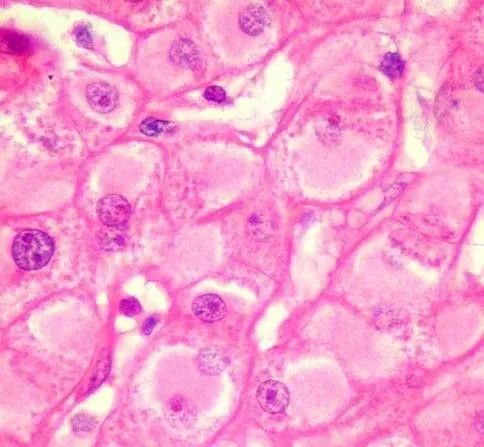
Prova prática 2 · TGI e fígado
A segunda prova prática de Patologia Médica I cobra esôfago, estômago, intestinos e fígado. Esta página fica separada das aulas da matéria e da Prática 1: o progresso, as respostas e o treino daqui são só da Prática 2.
Como é a prova
Cada questão traz uma imagem (peça, lâmina, EDA ou esquema) e um caso curto, com 2 ou 3 itens de resposta curta.
Os comandos se repetem: qual o diagnóstico?, cite 2 complicações, cite 2 fatores, o que a seta indica?, qual marcador?
Há pontuação parcial: em “cite 4”, cada acerto vale uma parte; “DII” vale menos que “doença de Crohn”. Seja específico.
Como treinar aqui
Cada aula é dividida em tópicos, como nas outras partes do master: Comece aqui (o que cai, o roteiro do laboratório e o “fecha o caso quando”), um tópico por doença (a chave, macro, micro, clínica, as lâminas e peças explicadas e o que cai na prova), a comparação lado a lado e, por último, as questões da aula.
Os grifos coloridos mostram o que mais caiu: quanto mais escuro, mais fontes cobraram (provas e monitores). Passe o mouse para ver onde caiu.
Nas questões: primeiro as de prova, depois os casos dos monitores e, recolhidas, as autorais.
Escreva a resposta na caixa, depois confira com o gabarito e marque Acertei, Parcial ou Errei. O que você errar vai para Minha revisão.
Na véspera: Treino de lâminas (diagnóstico escondido) e um simulado.
De onde vem cada questão
📝 Das provas Prática 2 · 79 (07/12/2024): imagem da prova, comandos anotados por uma aluna, gabarito oficial.
📝 Questão de prova · reconstruída da justificativa Prática 2 · 81 e 82: enunciado e itens reconstruídos a partir da justificativa oficial; o gabarito é o oficial, a imagem é das aulas.
🧑🏫 Revisão dos monitores 2024.2 casos com imagem e resposta dos monitores.
🧑🏫 Questionário dos monitores (forms) casos do forms de revisão da 2ª prática, com o gabarito dos monitores.
✍️ Autoral feitas por nós, sempre recolhidas no fim das questões da aula.
Caiu em 3 provas da Prática 2 do acervo (79, 81 e 82) · 3 questões de prova · 5 casos dos monitores
Na prova, o esôfago aparece de dois jeitos: a hematêmese (pense em varizes, Mallory-Weiss e câncer) e a sequência do refluxo (esofagite → Barrett → adenocarcinoma). O câncer se separa pelo terço: médio = CEC, distal = adenocarcinoma.
🧪 Roteiro do laboratório
Peças D13 e D26 · lâmina de adenocarcinoma esofágico
Varizes esofágicas: cirrótico ou etilista com hematêmese; EDA com cordões azulados, tortuosos no terço distal; micro: vasos ectásicos na submucosa. Causa: hipertensão portal.79 · Q8Monitores · caso 19
Síndrome de Mallory-Weiss: vômitos repetidos (etilista) e depois hematêmese; laceração longitudinal na junção esofagogástrica. Se rasga a parede toda: Boerhaave.79 · Q8
Esofagite de refluxo: micro com eosinófilos intraepiteliais, hiperplasia da camada basal e alongamento das papilas; macro: hiperemia e erosões.Monitores · caso 18Forms · caso 4
Esôfago de Barrett: mucosa cor salmão com projeções digitiformes acima da JEG; micro: metaplasia intestinal (células caliciformes) no lugar do epitélio escamoso.81 · Q682 · Q8Monitores · caso 17Forms · caso 3
Adenocarcinoma do esôfago: terço distal, sobre Barrett, DRGE de longa data; micro: glândulas atípicas produtoras de muco.81 · Q682 · Q8Monitores · caso 17
Grifos de frequência (quantas fontes cobraram o tema: provas 79, 81 e 82, revisão e forms dos monitores)4 ou mais3 fontes2, com prova2 fontes1 fonte
Aula 1 · Esôfago
1.2 · Esôfago normal
nunca caiu
Quatro camadas e sem serosa: tem adventícia. Por isso o câncer invade órgãos vizinhos cedo.
Mucosa
Epitélio escamoso estratificado não queratinizado, lâmina própria, muscular da mucosa.
Submucosa
Glândulas esofágicas e plexo venoso (onde nascem as varizes).
Muscular própria
Estriada no terço superior, mista no médio, lisa no inferior.
Externa
Adventícia, sem serosa (cai em prova: "ausência de serosa").
🔬 Lâminas e peças
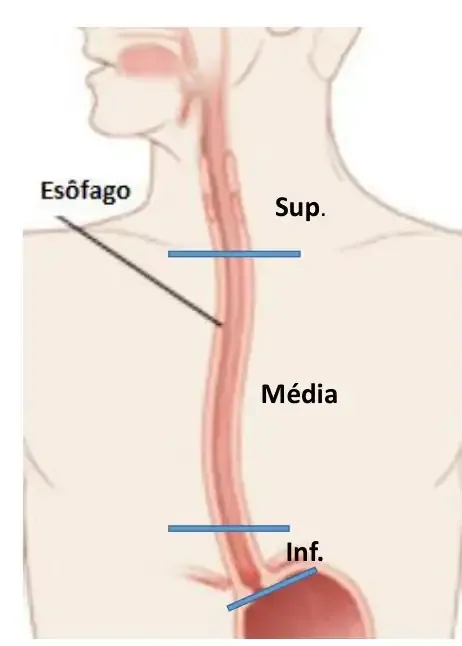
Esôfago com as três regiões. Superior (cervical) com o EES, média (torácica) e inferior (supra e infradiafragmática) com o EEI. Vai da epiglote à junção esofagogástrica (JEG), com 25 a 33 cm.
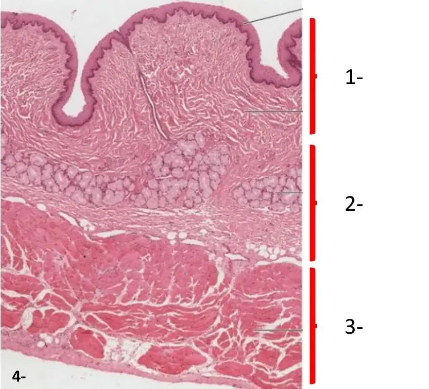
Parede esofágica em menor aumento (HE). 1 = mucosa; 2 = submucosa com glândulas; 3 = muscular própria; 4 = adventícia (embaixo, fora do campo).
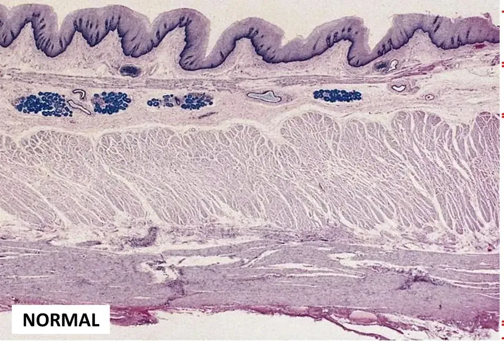
Parede normal: mucosa, submucosa, muscular própria e adventícia.
Aula 1 · Esôfago
1.3 · Varizes esofágicas
caiu na prova 79 · revisão dos monitores
Cirrose → hipertensão portal → colaterais porto-sistêmicas na submucosa do esôfago distal.
Macro
Cordões venosos azulados e tortuosos no terço distal; mucosa fina por cima. Na peça podem parecer colabados.
Micro
Veias muito dilatadas e congestas na submucosa, mucosa adelgaçada, às vezes erodida.
Clínica
Assintomáticas até romper: hematêmese volumosa, choque. Etilista com HDA = pensar nelas.
Complicação
Ruptura com hemorragia maciça, principal causa de morte por sangramento no cirrótico.
🔬 Lâminas e peças
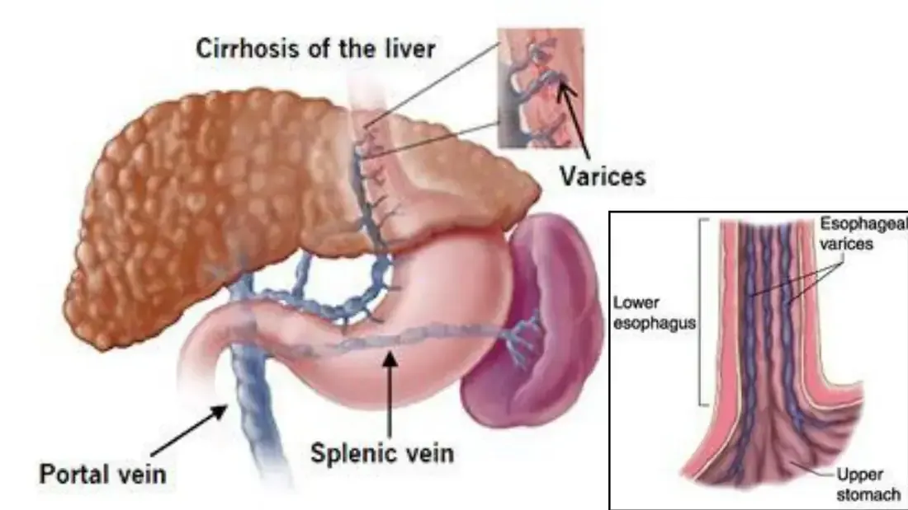
Cirrose → hipertensão portal → varizes no esôfago distal. Repare na veia porta e na veia esplênica, e no detalhe das veias submucosas dilatadas.
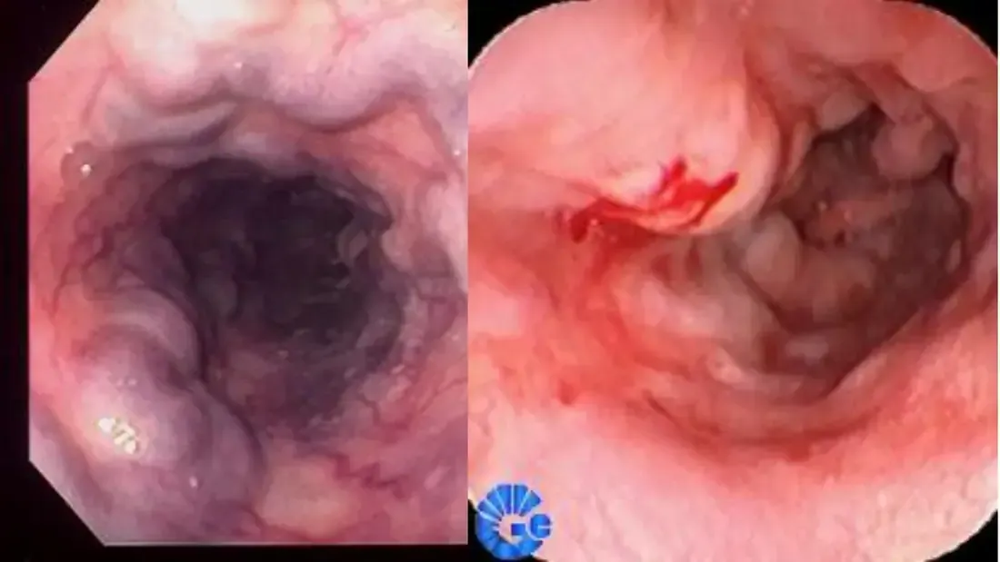
EDA: cordões venosos azulados e tortuosos que fazem relevo na luz.
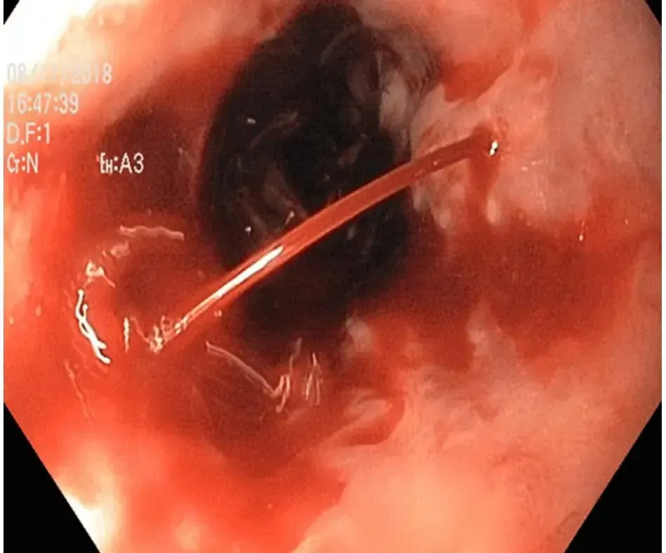
EDA: sangramento varicoso em jato.
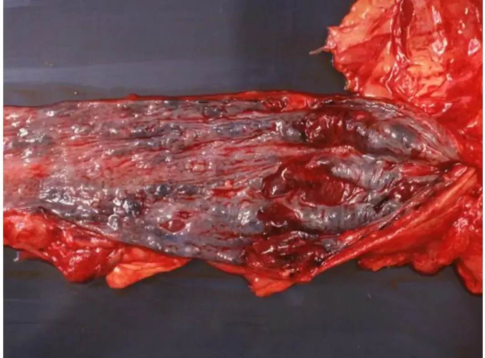
Peça: esôfago aberto com veias submucosas dilatadas e mucosa azulada e delgada.
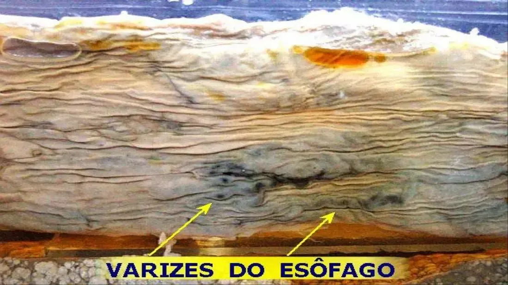
Peça de laboratório: varizes do esôfago (setas amarelas) no terço distal.
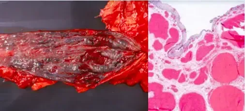
Varizes esofágicas: peça com veias submucosas dilatadas e azuladas (esq.) e lâmina com vasos muito dilatados e congestos na submucosa (dir.).
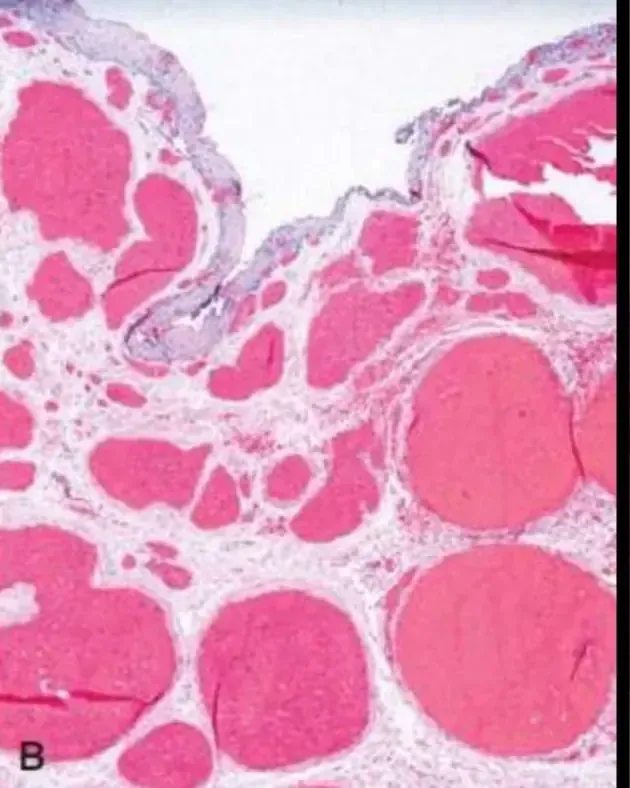
Varizes: veias muito dilatadas e congestas na submucosa, logo abaixo de uma mucosa adelgaçada.
🎯 Na prova
Peça com veias azuladas no esôfago distal → varizes. Causa: hipertensão portal (cirrose, esquistossomose). Lâmina: veias dilatadas na submucosa.
não caiu em prova · revisão dos monitores e forms dos monitores
Falha da barreira antirrefluxo (EEI, ângulo de His, ligamento frenoesofágico, diafragma).
Hérnia tipo I/III
Por deslizamento: a JEG sobe pelo hiato. A mais comum e a mais associada a refluxo.
Hérnia tipo II
Paraesofágica ou por rolamento: o fundo sobe ao lado do esôfago, a JEG fica no lugar.
Diagnóstico
Clínica; EDA; impedâncio-pHmetria registra cada refluxo e o pH.
Evolução
Esofagite → Barrett → adenocarcinoma.
🔬 Lâminas e peças
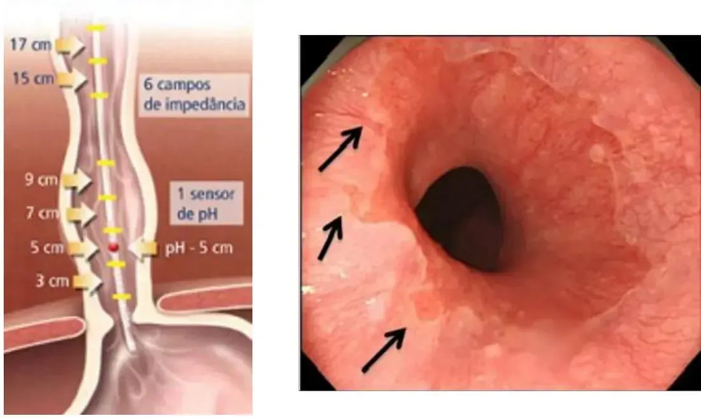
À esquerda, a impedâncio-pHmetria: sensores ao longo do esôfago registram cada episódio de refluxo e o pH. À direita, EDA com erosões lineares no esôfago distal (setas).
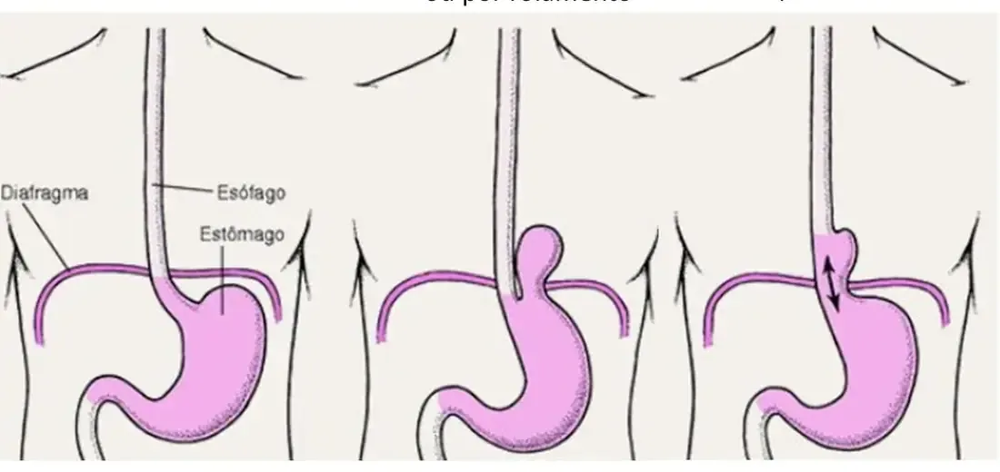
Normal, tipo II (paraesofágica, "por rolamento") e tipo III (esofagogástrica, "por deslizamento"). Compare onde fica a JEG em cada desenho.
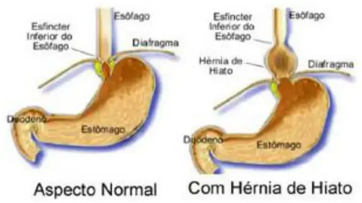
Aspecto normal × com hérnia de hiato: o EEI sai do nível do diafragma.
caiu na provas 81 e 82 · revisão dos monitores e forms dos monitores
Metaplasia intestinal: o epitélio escamoso vira colunar com células caliciformes. Lesão precursora do adenocarcinoma.
EDA
Mucosa cor de salmão, aveludada, com projeções digitiformes acima da JEG.
Micro
Epitélio colunar com caliciformes (vacúolos claros de muco) ao lado do escamoso.
Causa
Refluxo crônico. Homem branco, meia-idade, obeso.
Conduta
EDA com biópsias seriadas para procurar displasia.
🔬 Lâminas e peças
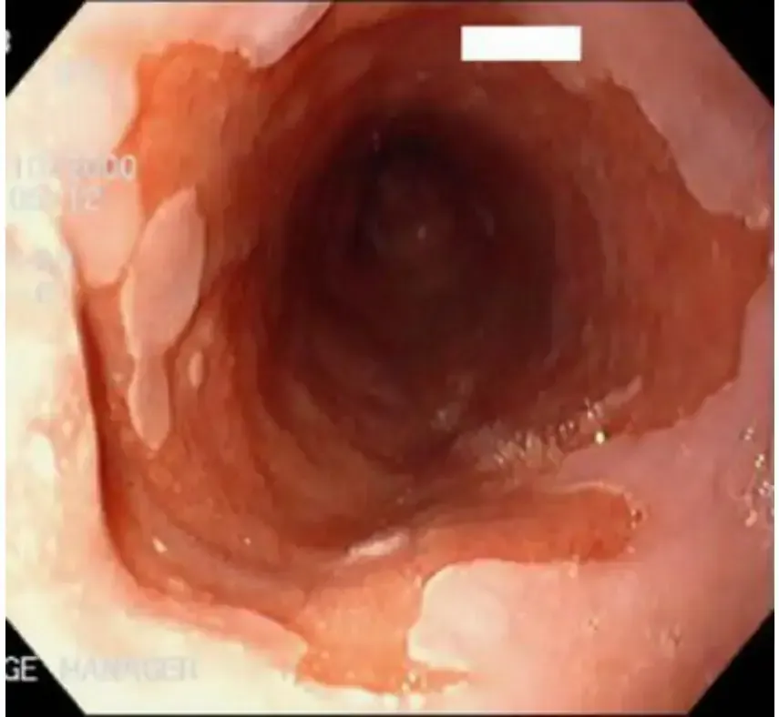
EDA: mucosa aveludada, cor salmão, com projeções digitiformes subindo acima da JEG.
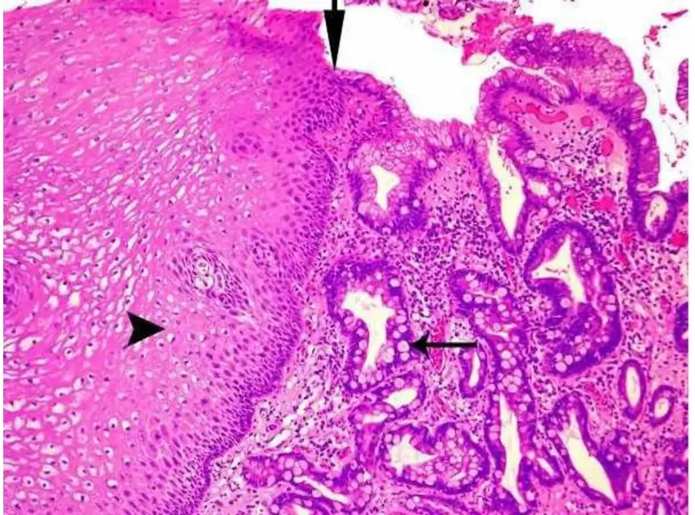
Transição do epitélio escamoso (cabeça de seta) para o colunar com células caliciformes (seta).
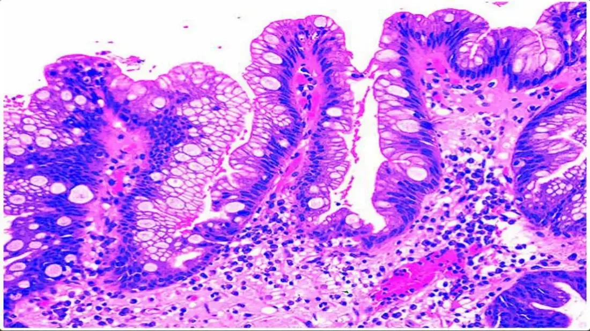
Metaplasia intestinal: epitélio colunar com células caliciformes (vacúolos claros de muco).Displasia no Barrett: núcleos alongados, hipercromáticos e estratificados, perdendo a polaridade.
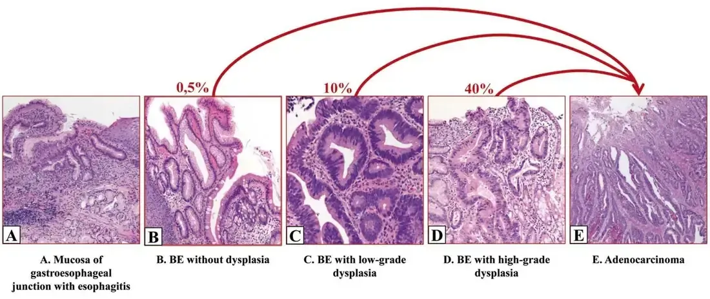
A → E: mucosa da JEG com esofagite; Barrett sem displasia (0,5%); com displasia de baixo grau (10%); com displasia de alto grau (40%); adenocarcinoma. As porcentagens são o risco de chegar ao adenocarcinoma indicado no slide.
🎯 Na prova
Prática 81: "mucosa salmão acima da JEG" → Barrett; exame = EDA com biópsia; complicação = adenocarcinoma.
A comparação que a prova cobra: leia na horizontal, um achado de cada lado.
CCE
Adenocarcinoma
Local
Terço médio
Terço distal / JEG
Precursor
Displasia escamosa
Barrett
Fatores
Tabaco, álcool, bebida quente
DRGE, obesidade
Micro
Ninhos + pérolas córneas
Glândulas atípicas
Aula 1 · Esôfago
1.11 · Questões da aula
Caiu em 3 provas da Prática 2 do acervo (79, 81 e 82) · 3 questões de prova · 5 casos dos monitores
Primeiro as questões de prova, depois os casos dos monitores e, recolhidas, as nossas. Escreva, confira e marque como foi.
📝 Das provas · 3 questões
📝 Das provas · Prática 2 · 79 · Questão 8
Comandos dos itens anotados por uma aluna durante a prova; gabarito e pontuação oficiais. O texto do caso não foi guardado: o enunciado aqui é um resumo neutro.
CasoPaciente com hematêmese. Peça de esôfago (a); foi feita biópsia da lesão.
a) Levando em consideração somente a hematêmese, cite hipóteses diagnósticas.
b) Considerando a biópsia, cite o diagnóstico.
c) Cite 3 fatores de risco.
Resposta esperada (gabarito oficial)
a) Levando em consideração somente a hematêmese, cite hipóteses diagnósticas.Síndrome de Mallory-Weiss, varizes esofagianas, CEC esofagiano.
b) Considerando a biópsia, cite o diagnóstico.Carcinoma de células escamosas.
c) Cite 3 fatores de risco.Tabagismo, obesidade, dieta, acalasia.
⚠️ O gabarito oficial cita obesidade; nas aulas, a obesidade é fator do adenocarcinoma (via refluxo). Para o CEC, as respostas mais seguras são tabagismo, etilismo, bebidas muito quentes, dieta pobre em frutas e verduras e acalasia.
Como foi?
📝 Questão de prova · reconstruída da justificativa · Prática 2 · 81 · Questão 6
Enunciado e itens reconstruídos a partir da justificativa oficial; o gabarito é o oficial. A imagem é das aulas, não a da prova.
CasoHomem de 59 anos com pirose e regurgitação há 20 anos, sem tratamento regular. A EDA mostra a imagem.
a) Descreva a alteração vista na EDA e o que ela representa na histologia.
b) Qual neoplasia essa alteração predispõe?
Resposta esperada (gabarito oficial)
a) Descreva a alteração vista na EDA e o que ela representa na histologia.Área de mucosa aveludada cor rosa-salmão formando projeções digitiformes acima da JEG; metaplasia intestinal (substituição do epitélio escamoso por colunar intestinal).
b) Qual neoplasia essa alteração predispõe?Adenocarcinoma (do esôfago).
Como foi?
📝 Questão de prova · reconstruída da justificativa · Prática 2 · 82 · Questão 8
Enunciado e itens reconstruídos a partir da justificativa oficial; o gabarito é o oficial. A imagem é das aulas, não a da prova.
CasoHomem de 57 anos, obeso, com pirose há 15 anos. Biópsia do esôfago distal, acima da junção esofagogástrica (imagem).
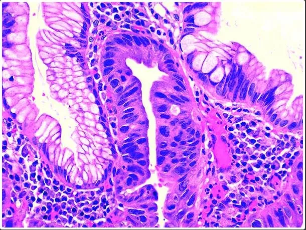
a) Qual o diagnóstico?
b) Qual neoplasia essa condição predispõe?
Resposta esperada (gabarito oficial)
a) Qual o diagnóstico?Esôfago de Barrett.
b) Qual neoplasia essa condição predispõe?Adenocarcinoma esofágico.
Como foi?
🧑🏫 Revisão dos monitores 2024.2 · 3 casos
Casos do material de revisão dos monitores, com as respostas deles. Não são questões de prova.
🧑🏫 Revisão dos monitores 2024.2 · Caso 17
CasoHomem de 57 anos, tabagista e hipertenso, com 30 anos de DRGE mal controlada. A EDA mostra neoplasia maligna do esôfago (imagem).
a) Cite o tipo histológico mais provável e descreva a microscopia.
b) Descreva a sequência completa até esse ponto.
Resposta esperada (gabarito dos monitores)
a) Cite o tipo histológico mais provável e descreva a microscopia.Adenocarcinoma: glândulas atípicas produtoras de muco (DRGE longa + Barrett na imagem, cor salmão).
b) Descreva a sequência completa até esse ponto.DRGE → metaplasia intestinal (Barrett) → displasia de baixo grau → displasia de alto grau → adenocarcinoma in situ → invasor.
Como foi?
🧑🏫 Revisão dos monitores 2024.2 · Caso 18
CasoMicroscopia de uma alteração esofágica associada ao refluxo gastroesofágico.
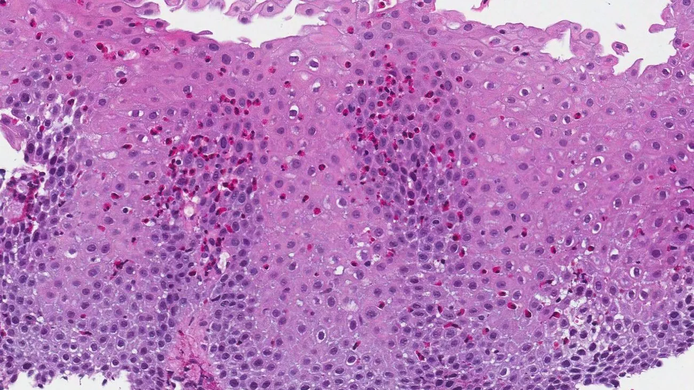
a) Cite o nome da complicação correspondente.
b) Descreva a patogênese a partir da causa base.
c) Cite 3 aspectos microscópicos.
Resposta esperada (gabarito dos monitores)
a) Cite o nome da complicação correspondente.Esofagite de refluxo.
b) Descreva a patogênese a partir da causa base.O refluxo ácido descama o epitélio, que regenera; com a agressão repetida, a perda supera a regeneração: atrofia, erosões e úlceras.
c) Cite 3 aspectos microscópicos.Infiltrado inflamatório intraepitelial com eosinófilos; hiperplasia da camada basal; alongamento das papilas e congestão.
Como foi?
🧑🏫 Revisão dos monitores 2024.2 · Caso 19
CasoHomem de 68 anos, tabagista, etilista com doença hepática confirmada e anemia crônica sem causa definida. EDA (imagem).
a) Cite a alteração e descreva a macroscopia.
b) Como ela explica a anemia crônica?
c) Descreva a fisiopatologia desde a causa base.
Resposta esperada (gabarito dos monitores)
a) Cite a alteração e descreva a macroscopia.Varizes esofágicas: veias submucosas dilatadas e salientes, mucosa delgada e azulada.
b) Como ela explica a anemia crônica?A pressão alta deixa as veias frágeis; rupturas de vasos pequenos causam perda de sangue lenta e repetida (vasos grandes dão hematêmese aguda).
c) Descreva a fisiopatologia desde a causa base.Cirrose → hipertensão portal → congestão retrógrada (veia porta → gástrica esquerda → esofágicas) → dilatação das veias esofágicas.
Como foi?
🧑🏫 Questionário de revisão dos monitores (forms) · 2 casos
Casos do forms que os monitores fizeram para a 2ª prática, com o gabarito deles (revisão 26/2). Não são questões de prova.
🧑🏫 Questionário dos monitores (forms) · Caso 3
CasoHomem, 56 anos, obeso (IMC 34 kg/m²), com pirose e regurgitação diárias há cerca de 15 anos, piores ao deitar. Faz uso crônico de antiácidos por conta própria e nunca realizou investigação. É tabagista (30 anos-maço) e nega disfagia ou perda de peso. Foi submetido à EDA com biópsia do esôfago distal, e a imagem histológica é apresentada.
a) Descreva os achados microscópicos da lâmina e a alteração que eles representam em relação ao epitélio esofágico normal.
b) Com base na lâmina e no quadro clínico, qual aspecto macroscópico é esperado na EDA? Em que localização?
c) Qual tipo de carcinoma esofágico se associa a essa lesão? Justifique.
Resposta esperada (gabarito dos monitores)
a) Descreva os achados microscópicos da lâmina e a alteração que eles representam em relação ao epitélio esofágico normal.Substituição do epitélio escamoso estratificado normal por epitélio colunar do tipo intestinal, com células caliciformes entre as colunares: metaplasia intestinal, uma adaptação à agressão crônica pelo refluxo.
b) Com base na lâmina e no quadro clínico, qual aspecto macroscópico é esperado na EDA? Em que localização?Mucosa aveludada, cor de salmão, com projeções digitiformes, no esôfago distal, acima da junção esofagogástrica.
c) Qual tipo de carcinoma esofágico se associa a essa lesão? Justifique.Adenocarcinoma esofágico. O Barrett é o principal fator de risco, porque o tumor deriva do epitélio metaplásico. O carcinoma de células escamosas deriva do epitélio habitual do esôfago e não se associa ao Barrett.
Como foi?
🧑🏫 Questionário dos monitores (forms) · Caso 4
CasoHomem de 22 anos, tabagista, queixa-se de pirose pós-prandial, regurgitação e odinofagia matinal. A EDA mostra áreas de hiperemia e erosões no terço distal do esôfago. A biópsia está representada na imagem.
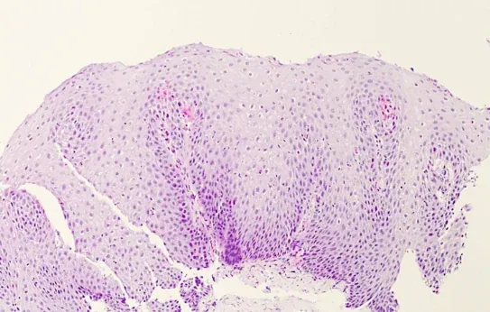
a) Cite os três achados histológicos característicos desta condição.
b) Explique a patogênese que leva à hiperplasia da camada basal e ao alongamento das papilas da lâmina própria.
c) Se o refluxo persistir por anos, quais são duas consequências morfológicas possíveis?
Resposta esperada (gabarito dos monitores)
a) Cite os três achados histológicos característicos desta condição.1. Células inflamatórias intraepiteliais (eosinófilos, neutrófilos e linfócitos); 2. hiperplasia da camada basal, que ocupa até 20% da espessura do epitélio; 3. alongamento das papilas da lâmina própria, com congestão.
b) Explique a patogênese que leva à hiperplasia da camada basal e ao alongamento das papilas da lâmina própria.O epitélio esofágico resiste bem à abrasão dos alimentos, mas é sensível ao ácido. O refluxo causa lesão e descamação do epitélio, o que gera regeneração: hiperplasia basal e alongamento das papilas da lâmina própria, que ficam congestas.
c) Se o refluxo persistir por anos, quais são duas consequências morfológicas possíveis?Atrofia do epitélio, erosões, ulcerações com hemorragia, cicatrização com fibrose e estenose, e metaplasia intestinal (Barrett).
Como foi?
✍️ Autorais · 2 questões (feitas por nós)
✍️ Autoral
CasoHomem de 40 anos, após uma noite de bebida, teve vários episódios de vômito e depois vomitou sangue vivo. EDA na imagem.
a) Qual o diagnóstico?
b) Qual a complicação grave se a laceração atingir toda a parede?
Resposta esperada (gabarito nosso)
a) Qual o diagnóstico?Síndrome de Mallory-Weiss (laceração longitudinal da mucosa na junção esofagogástrica).
b) Qual a complicação grave se a laceração atingir toda a parede?Ruptura (síndrome de Boerhaave), com mediastinite.
Como foi?
✍️ Autoral
CasoBiópsia de lesão ulcerada no terço médio do esôfago de homem de 64 anos, tabagista e etilista.
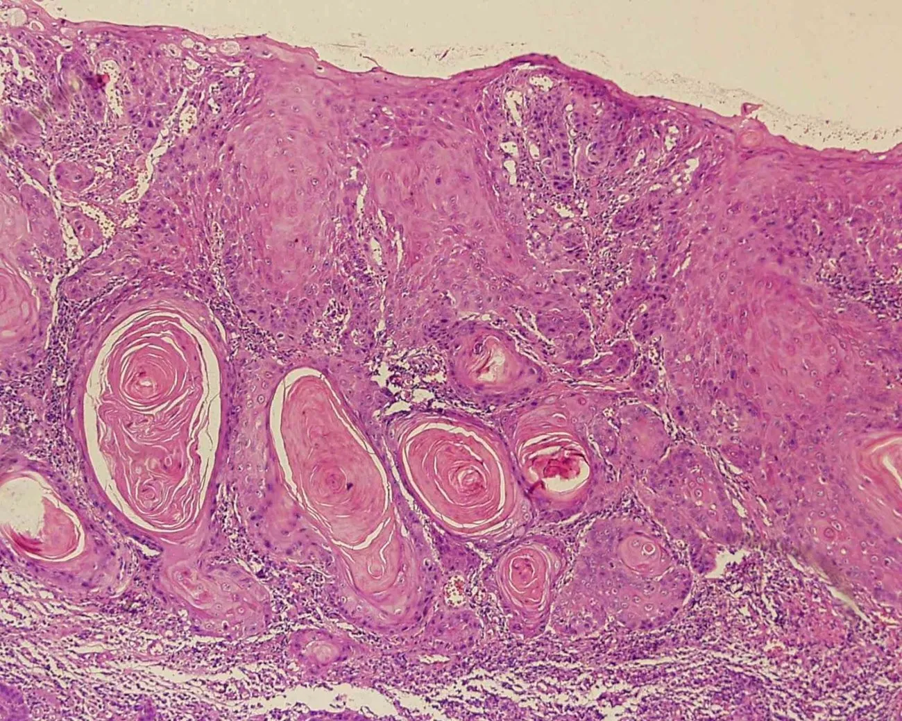
a) Qual o tipo histológico?
b) Que achado da imagem sustenta isso?
c) Em que terço ele é mais comum, e o adenocarcinoma?
Resposta esperada (gabarito nosso)
a) Qual o tipo histológico?Carcinoma de células escamosas.
b) Que achado da imagem sustenta isso?Pérolas córneas (queratinização em ninhos).
c) Em que terço ele é mais comum, e o adenocarcinoma?CEC: terço médio. Adenocarcinoma: terço distal.
Como foi?
Aula 2 · Estômago
2.1 · Comece aqui
Caiu em 3 provas da Prática 2 do acervo (79, 81 e 82) · 3 questões de prova · 6 casos dos monitores
O estômago cai com a mesma pergunta disfarçada: a lesão é úlcera benigna ou carcinoma? E, se for carcinoma, intestinal (glândulas, massa ou úlcera) ou difuso (anel de sinete, parede rígida, Borrmann IV)? O H. pylori está por trás de quase tudo, e só a biópsia fecha o caso.
🧪 Roteiro do laboratório
Peças D27 (normal), D3 (úlcera), D4, D18, D20, D39 (carcinoma) · lâmina 30 (úlcera gástrica) e lâmina de carcinoma gástrico
Gastrite crônica autoimune: corpo e fundo atróficos (mucosa lisa, sem pregas) com antro poupado; micro: atrofia, metaplasia e hiperplasia de células ECL. Anemia perniciosa. Sem ácido, o antro solta gastrina sem parar: risco de tumor neuroendócrino (carcinoide).82 · Q9Monitores · caso 15Forms · caso 5
Gastrite por H. pylori: antro hiperemiado; micro: neutrófilos entre as glândulas (atividade), folículos linfoides e bacilos no muco (Giemsa, carbol-fucsina).
Úlcera péptica: lesão redonda/oval, bordas regulares, fundo limpo (fibrina); micro em 4 camadas: debris e PMN, necrose fibrinoide, tecido de granulação, fibrose. Principal fator: H. pylori; depois AINE, tabaco, álcool.79 · Q7Monitores · caso 16
Carcinoma gástrico tipo intestinal: massa vegetante ou úlcera de bordas irregulares; micro: glândulas atípicas justapostas. Vem da gastrite atrófica por H. pylori.79 · Q7Monitores · caso 14Forms · caso 6
Carcinoma gástrico difuso: parede espessada e rígida, sem massa (Borrmann IV, linite plástica); micro: células isoladas em anel de sinete.81 · Q7Monitores · caso 13
Grifos de frequência (quantas fontes cobraram o tema: provas 79, 81 e 82, revisão e forms dos monitores)4 ou mais3 fontes2, com prova2 fontes1 fonte
Aula 2 · Estômago
2.2 · Estômago normal
nunca caiu
Duas mucosas: oxíntica (fundo e corpo) e antral.
Oxíntica
Glândulas retas e longas; células parietais (HCl e fator intrínseco, rosadas) e principais (pepsinogênio).
Antral
Fovéolas mais profundas, glândulas mucossecretoras, células G (gastrina) e D (somatostatina).
Peça D27
Aberta pela grande curvatura: JEG, fundo, corpo, incisura angular (pequena curvatura), antro, piloro.
Camadas
Mucosa, submucosa, muscular própria (3 camadas) e serosa.
🔬 Lâminas e peças
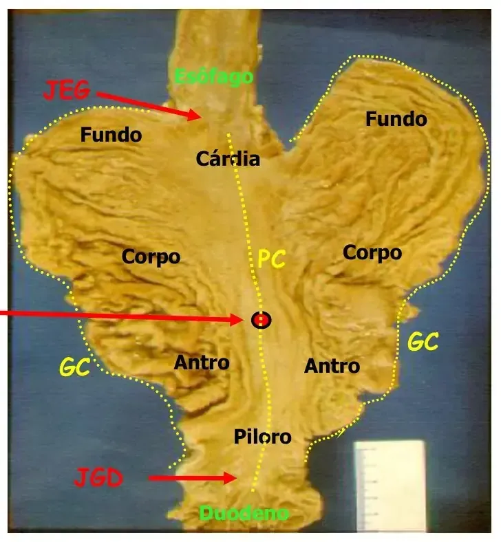
Peça aberta pela grande curvatura: JEG, fundo, cárdia, corpo, incisura angular, antro, piloro e JGD.
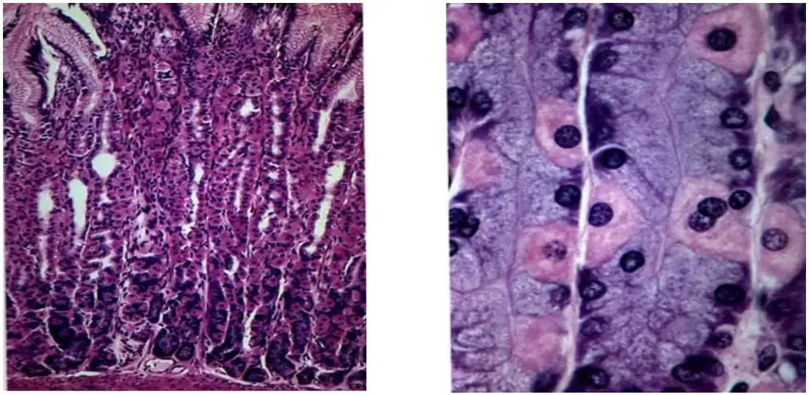
Mucosa oxíntica (fundo e corpo): glândulas retas e longas; em maior aumento, células parietais (rosadas, ricas em mitocôndrias) e principais (zimogênicas, basofílicas).
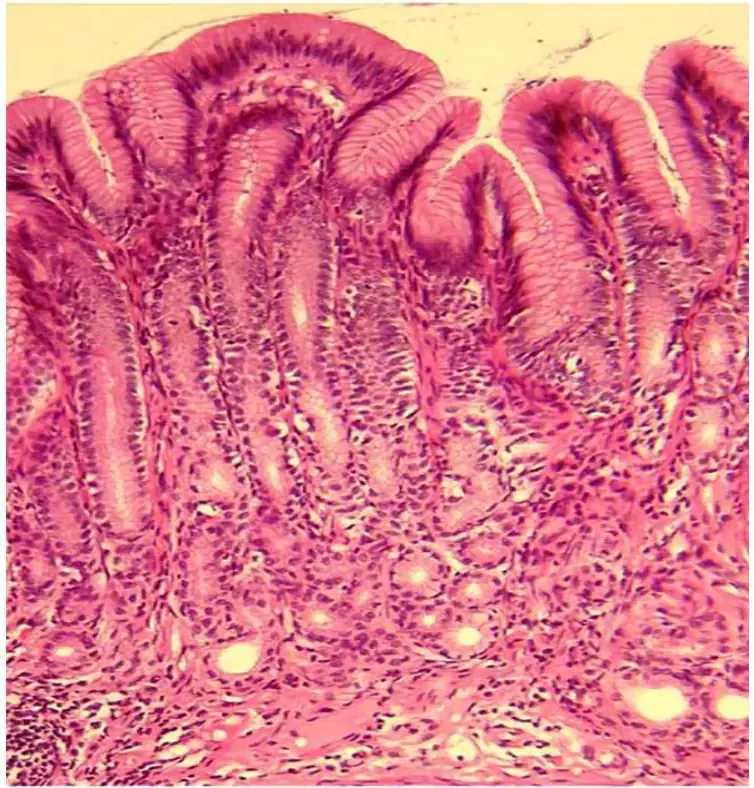
Mucosa antral: fovéolas mais profundas e glândulas de células mucossecretoras.
Aula 2 · Estômago
2.3 · Gastrite crônica autoimune
caiu na prova 82 · revisão dos monitores e forms dos monitores
Anticorpos anti-célula parietal atacam corpo e fundo. O antro é poupado.
Micro
Infiltrado mononuclear, atrofia das glândulas oxínticas, metaplasia intestinal, hiperplasia de células neuroendócrinas (ECL).
EDA
Corpo/fundo com mucosa fina e sem pregas (atrofia).
Fisiopato
Hipocloridria → células G hipertrofiam → hipergastrinemia → estímulo às ECL.
Atrofia multifocal → hipocloridria → úlcera gástrica e carcinoma; também linfoma MALT.
Diagnóstico
EDA com biópsia, teste rápido da urease, teste respiratório.
🔬 Lâminas e peças
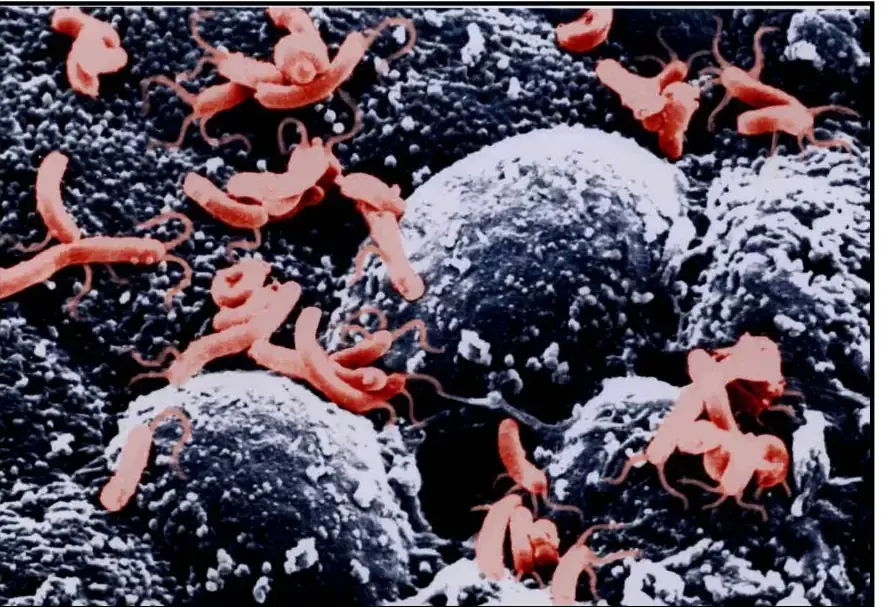
Microscopia eletrônica: bacilos espiralados com flagelos sobre o epitélio gástrico.
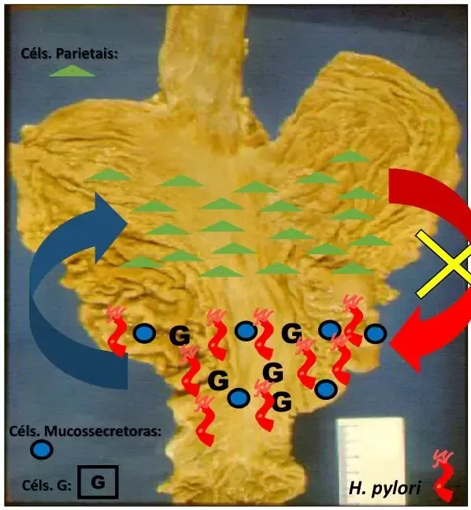
Fisiopatologia da gastrite antral por H. pylori: urease → NH3 → ↑pH antral → estímulo às células G → hipergastrinemia (feedback bloqueado) → hipercloridria → conteúdo ácido no duodeno → úlcera péptica duodenal.
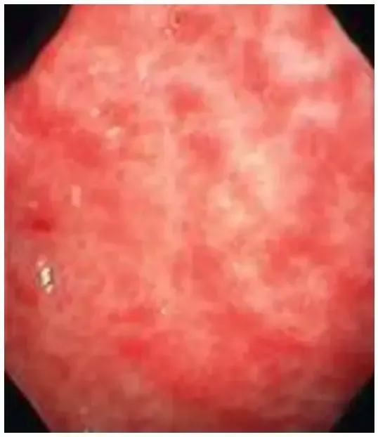
EDA: gastrite por H. pylori com hiperemia antral.
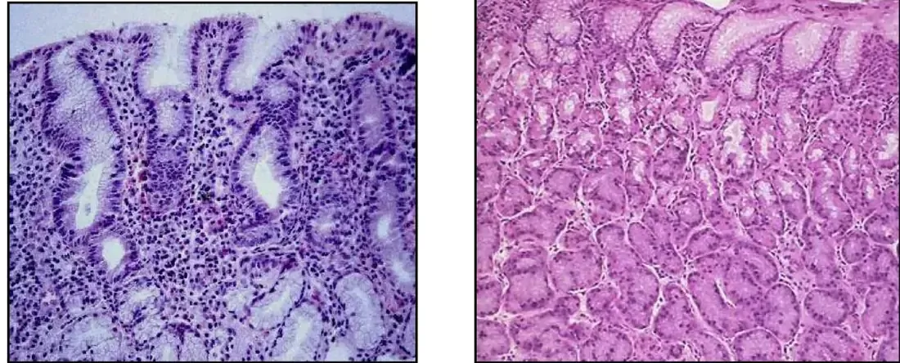
À esquerda, inflamação da mucosa antral (HE): lâmina própria cheia de linfócitos e plasmócitos. À direita, antro normal.Inflamação antral (HE) e H. pylori em coloração especial (Carbol-Fucsina), na superfície e no muco.Agressão neutrofílica = atividade (HE) e H. pylori no Giemsa (setas vermelhas).Antro com metaplasia intestinal focal (setas).
Aula 2 · Estômago
2.5 · Úlcera péptica
caiu na prova 79 · revisão dos monitores
Defeito que ultrapassa a muscular da mucosa (erosão não ultrapassa). UPG: incisura angular.
Macro (benigna)
Redonda/oval, 0,5–2 cm, bordas regulares e planas, fundo limpo com fibrina, pregas convergentes que chegam até a borda.
Úlcera péptica: redonda ou oval, bordas regulares, fundo limpo (fibrina) e pregas convergindo para ela.EDA: UPD e UPG (círculos azuis).Superficial, profunda, perfurada e terebrante (tamponada pelo pâncreas).Esquema: 1 debris celulares e PMNs; 2 necrose fibrinoide; 3 tecido de granulação; 4 fibrose.A lâmina real, com as quatro camadas de cima para baixo.Peça histológica de úlcera em pequeno aumento: margens, base, fibrose e vaso espessado. A muscular própria está interrompida.
🎯 Na prova
Lâmina 30: diga as 4 camadas na ordem. Tipos pela profundidade: superficial, profunda, perfurada (peritonite) e terebrante (tamponada pelo pâncreas).
Borrmann: I vegetante/polipoide; II ulcerado; III úlcero-infiltrativo; IV infiltrativo (linite plástica, anular).Borrmann no esquema e nas peças: I vegetante, II ulcerado, III úlcero-infiltrativo, IV infiltrativo (linite plástica).Peça do caso: lesão ulcerada de bordas elevadas e irregulares.Corte da mesma lesão: "Borrmann? Infiltração?" — a úlcera se aprofunda e infiltra a parede.Lauren: intestinal = glândulas atípicas justapostas (OMS: carcinoma tubular); difuso = células isoladas com muco, em anel de sinete (OMS: carcinoma pouco coeso).Lesão vegetante e histologia com glândulas: intestinal.Parede espessada e infiltrada; histologia com células em anel de sinete: difuso.Borrmann IV — linite plástica: parede espessa, rígida, mucosa sem pregas; carcinoma infiltrativo, tipo difuso de Lauren. O anel ilustra a célula em anel de sinete.Carcinoma tipo intestinal invadindo a subserosa; no detalhe, êmbolo tumoral dentro de um vaso.Metástase de carcinoma gástrico em linfonodo: glândulas atípicas no meio do tecido linfoide.(N) metástase linfonodal (seta) e (M) metástases hepáticas múltiplas.Nódulo da Irmã Maria José (cicatriz umbilical), linfonodo supraclavicular (sinal de Troisier / nódulo de Virchow) e tumor de Krukenberg (ovário).Precoce × avançado, com a sobrevida em 5 anos: T1 mucosa 99%, T1 submucosa 95%, T2 70%, T3 50%, T4 8 a 20%.
🎯 Na prova
Prática 81: parede espessa e rígida → Borrmann IV, linite plástica, tipo difuso, anel de sinete. Prática 79: úlcera gástrica → diferencial úlcera péptica × carcinoma intestinal, agente H. pylori, exame biópsia.
A comparação que a prova cobra: leia na horizontal, um achado de cada lado.
Úlcera benigna
Úlcera maligna
Forma
Redonda, regular
Irregular
Bordas
Planas, nítidas, "em saca-bocado"
Elevadas, endurecidas, amontoadas
Fundo
Limpo, fibrina
Necrótico, sujo
Pregas
Convergem até a borda
Interrompidas ou espessadas antes da borda
Aula 2 · Estômago
2.9 · Questões da aula
Caiu em 3 provas da Prática 2 do acervo (79, 81 e 82) · 3 questões de prova · 6 casos dos monitores
Primeiro as questões de prova, depois os casos dos monitores e, recolhidas, as nossas. Escreva, confira e marque como foi.
📝 Das provas · 3 questões
📝 Das provas · Prática 2 · 79 · Questão 7
Comandos dos itens anotados por uma aluna durante a prova; gabarito e pontuação oficiais. O texto do caso não foi guardado: o enunciado aqui é um resumo neutro.
CasoIlustração de estômago com uma lesão na mucosa.
a) Cite 2 diagnósticos prováveis.
b) Cite 1 microrganismo que poderia causar esses 2 diagnósticos.
c) Cite o exame principal para definir qual é a lesão.
Resposta esperada (gabarito oficial)
a) Cite 2 diagnósticos prováveis.Úlcera péptica e carcinoma gástrico tipo intestinal.
b) Cite 1 microrganismo que poderia causar esses 2 diagnósticos.Helicobacter pylori.
c) Cite o exame principal para definir qual é a lesão.Biópsia.
Como foi?
📝 Questão de prova · reconstruída da justificativa · Prática 2 · 81 · Questão 7
Enunciado e itens reconstruídos a partir da justificativa oficial; o gabarito é o oficial. A imagem é das aulas, não a da prova.
CasoMulher de 44 anos com emagrecimento, saciedade precoce e vômitos. Peça de gastrectomia (imagem).
a) Classifique a lesão pela classificação de Borrmann.
b) Qual o tipo histológico esperado?
Resposta esperada (gabarito oficial)
a) Classifique a lesão pela classificação de Borrmann.Borrmann IV (linite plástica).
b) Qual o tipo histológico esperado?Carcinoma gástrico difuso / de células pouco coesas / em anel de sinete.
Como foi?
📝 Questão de prova · reconstruída da justificativa · Prática 2 · 82 · Questão 9
Enunciado e itens reconstruídos a partir da justificativa oficial; o gabarito é o oficial. A imagem é das aulas, não a da prova.
CasoMulher de 60 anos com anemia macrocítica, formigamento nos pés e anticorpo anticélula parietal positivo. EDA do corpo gástrico (imagem).
a) Qual hormônio está aumentado no sangue dessa paciente?
b) Que neoplasia o estímulo crônico desse hormônio pode causar?
Resposta esperada (gabarito oficial)
a) Qual hormônio está aumentado no sangue dessa paciente?Gastrina.
b) Que neoplasia o estímulo crônico desse hormônio pode causar?Tumor neuroendócrino gástrico.
Como foi?
🧑🏫 Revisão dos monitores 2024.2 · 4 casos
Casos do material de revisão dos monitores, com as respostas deles. Não são questões de prova.
🧑🏫 Revisão dos monitores 2024.2 · Caso 13
CasoPaciente de 48 anos com perda de 10 kg em 3 meses, anorexia e náuseas persistentes; lesões como as da imagem.
a) Cite o diagnóstico completo.
b) Classifique pelo Borrmann.
c) Descreva a histologia.
Resposta esperada (gabarito dos monitores)
a) Cite o diagnóstico completo.Carcinoma gástrico infiltrativo, tipo difuso de Lauren.
b) Classifique pelo Borrmann.Borrmann IV (infiltrativo).
c) Descreva a histologia.Células isoladas contendo muco (anel de sinete).
Como foi?
🧑🏫 Revisão dos monitores 2024.2 · Caso 14
CasoSobre os carcinomas gástricos, observe a imagem.
a) Qual o tipo de carcinoma mostrado?
b) Cite 2 complicações do carcinoma gástrico.
c) Cite o principal fator que predispõe esse tipo.
Resposta esperada (gabarito dos monitores)
a) Qual o tipo de carcinoma mostrado?Carcinoma gástrico tipo intestinal.
b) Cite 2 complicações do carcinoma gástrico.2 entre: perfuração, obstrução gástrica, hemorragia digestiva alta, entre outras.
c) Cite o principal fator que predispõe esse tipo.Gastrite crônica atrófica ou infecção por H. pylori.
Como foi?
🧑🏫 Revisão dos monitores 2024.2 · Caso 15
CasoMulher de 60 anos com dor em queimação e empachamento pós-prandial. EDA com biópsia (imagens).
a) Qual o diagnóstico? Seja específico.
b) Descreva a macroscopia da EDA.
c) O que as setas apontam?
Resposta esperada (gabarito dos monitores)
a) Qual o diagnóstico? Seja específico.Gastrite crônica autoimune.
b) Descreva a macroscopia da EDA.Atrofia da mucosa oxíntica (corpo e fundo), com menor espessura e perda do pregueamento; o antro fica normal.
c) O que as setas apontam?Hiperplasia das células ECL.
Como foi?
🧑🏫 Revisão dos monitores 2024.2 · Caso 16
CasoHomem de 45 anos com dor epigástrica em queimação e náuseas. EDA (imagem).
a) Qual o diagnóstico?
b) Cite o principal fator de risco e outros 2.
c) Descreva a macroscopia e as camadas esperadas na biópsia.
Resposta esperada (gabarito dos monitores)
a) Qual o diagnóstico?Úlcera péptica gástrica.
b) Cite o principal fator de risco e outros 2.Principal: H. pylori. Outros: AINE crônico, tabagismo, alcoolismo.
c) Descreva a macroscopia e as camadas esperadas na biópsia.Macro: lesão escavada, pequena, redonda/oval, bordas regulares, fundo limpo (fibrina). Micro: 1 debris e PMN, 2 necrose fibrinoide, 3 tecido de granulação, 4 fibrose.
Como foi?
🧑🏫 Questionário de revisão dos monitores (forms) · 2 casos
Casos do forms que os monitores fizeram para a 2ª prática, com o gabarito deles (revisão 26/2). Não são questões de prova.
🧑🏫 Questionário dos monitores (forms) · Caso 5
CasoHomem de 48 anos, diabético tipo 1 desde a adolescência, procura o gastroenterologista com dispepsia e plenitude pós-prandial há 6 meses, sem melhora com inibidor de bomba de prótons. Nega etilismo e uso de anti-inflamatórios. A endoscopia digestiva alta mostrou mucosa de corpo e fundo adelgaçada, com redução das pregas, e antro de aspecto normal. A pesquisa de H. pylori foi negativa, e a gastrina sérica estava muito elevada. Foram realizadas biópsias do corpo gástrico, representadas nas imagens.
a) Com base no quadro clínico e nas imagens, dê o diagnóstico (seja específico).
b) Cite 2 achados histológicos que sustentam esse diagnóstico.
c) Explique por que a gastrina sérica está elevada nesse paciente.
d) Cite a neoplasia gástrica diretamente relacionada a esse mecanismo e a célula que lhe dá origem.
Resposta esperada (gabarito dos monitores)
a) Com base no quadro clínico e nas imagens, dê o diagnóstico (seja específico).Gastrite crônica atrófica autoimune (gastrite atrófica metaplásica autoimune).
b) Cite 2 achados histológicos que sustentam esse diagnóstico.Dois entre: infiltrado mononuclear na lâmina própria, mais intenso na profundidade da mucosa; redução ou perda das glândulas oxínticas, com perda de células parietais e principais; metaplasia intestinal (células caliciformes); metaplasia pseudopilórica; hiperplasia de células endócrinas (ECL).
c) Explique por que a gastrina sérica está elevada nesse paciente.A destruição autoimune das células parietais leva à acloridria. Sem ácido, não há inibição por feedback das células G do antro, que está preservado. Por isso elas mantêm a secreção de gastrina.
d) Cite a neoplasia gástrica diretamente relacionada a esse mecanismo e a célula que lhe dá origem.Tumor neuroendócrino (carcinoide) gástrico tipo 1, originado das células ECL (enterocromafins-like), que proliferam pelo estímulo trófico crônico da gastrina.
Como foi?
🧑🏫 Questionário dos monitores (forms) · Caso 6
CasoHomem de 67 anos, tabagista e com dieta rica em alimentos defumados e conservados em sal, procura o médico com dor epigástrica, saciedade precoce e perda de 8 kg nos últimos 3 meses. Refere tratamento para H. pylori há cerca de 20 anos. Ao exame, nota-se linfonodo endurecido e indolor na fossa supraclavicular esquerda. A endoscopia digestiva alta mostrou, na pequena curvatura do antro, lesão ulcerada de 4 cm, com bordas elevadas e irregulares e pregas que se interrompem antes de alcançar a úlcera. A mucosa ao redor era pálida e adelgaçada. As imagens mostram os achados macro e microscópicos da lesão.
a) Com base no quadro clínico e nas imagens, dê o diagnóstico (seja específico).
b) Cite 2 achados histológicos que diferenciam essa lesão do outro tipo histológico da classificação de Lauren.
c) Cite 3 fatores de risco para essa neoplasia presentes no caso.
Resposta esperada (gabarito dos monitores)
a) Com base no quadro clínico e nas imagens, dê o diagnóstico (seja específico).Adenocarcinoma gástrico do tipo intestinal (classificação de Lauren).
b) Cite 2 achados histológicos que diferenciam essa lesão do outro tipo histológico da classificação de Lauren.Dois entre: formação de glândulas ou estruturas tubulares, com células coesas; crescimento expansivo, formando massa ou lesão vegetante/ulcerada; ausência de células em anel de sinete infiltrando isoladamente a parede; associação com metaplasia intestinal na mucosa adjacente.
c) Cite 3 fatores de risco para essa neoplasia presentes no caso.Três entre: infecção prévia por H. pylori; dieta rica em defumados e sal (nitrosaminas); tabagismo; gastrite atrófica (a mucosa pálida e adelgaçada ao redor); sexo masculino e idade acima de 60 anos.
Como foi?
✍️ Autorais · 2 questões (feitas por nós)
✍️ Autoral
CasoBiópsia de antro de homem de 35 anos com dor epigástrica (HE à esquerda; Giemsa à direita).
a) Qual o agente e o que indica a atividade da gastrite?
b) Na gastrite antral, o ácido sobe ou desce? Que úlcera ela favorece?
Resposta esperada (gabarito nosso)
a) Qual o agente e o que indica a atividade da gastrite?Helicobacter pylori; atividade = neutrófilos agredindo o epitélio.
b) Na gastrite antral, o ácido sobe ou desce? Que úlcera ela favorece?Sobe (hipergastrinemia → hipercloridria); favorece a úlcera duodenal.
Como foi?
✍️ Autoral
CasoLâmina de úlcera gástrica benigna.
Cite as 4 camadas, da luz para a profundidade.
Resposta esperada (gabarito nosso)
Cite as 4 camadas, da luz para a profundidade.1 debris e PMN; 2 necrose fibrinoide; 3 tecido de granulação; 4 fibrose.
Como foi?
Aula 3 · Intestino I
3.1 · Comece aqui
Caiu em 3 provas da Prática 2 do acervo (79, 81 e 82) · 4 questões de prova · 5 casos dos monitores
Três peças clássicas: alças vinhosas ou negras (infarto), apêndice aumentado com fibrina (apendicite) e óstios no sigmoide (doença diverticular). Os itens pedem a estrutura obstruída, a causa e uma complicação.
🧪 Roteiro do laboratório
Peças D1 (isquemia) e D10 (apendicite) · lâminas de apendicite e diverticulite
Infarto intestinal: idoso com fibrilação atrial e dor desproporcional ao exame; alças vinhosas a negras. Limite nítido = obstrução arterial (embolia da mesentérica superior). Micro: necrose + inundação hemorrágica, neutrófilos, bactérias.81 · Q3Monitores · caso 1Forms · caso 7
Apendicite aguda: jovem com dor que migra para a FID; apêndice aumentado, hiperemiado, com exsudato fibrinopurulento. Critério micro: neutrófilos na muscular própria. Causa: obstrução da luz (fecalito, hiperplasia linfoide, parasitas, tumor, corpo estranho).82 · Q2Monitores · caso 2
Doença diverticular: óstios na mucosa do sigmoide; pseudodivertículo (só mucosa e submucosa). Causas: fraqueza onde entram os vasos + pressão alta + dieta pobre em fibras. Complicação: diverticulite, perfuração, estenose.79 · Q282 · Q3Monitores · caso 3Forms · caso 8
Grifos de frequência (quantas fontes cobraram o tema: provas 79, 81 e 82, revisão e forms dos monitores)4 ou mais3 fontes2, com prova2 fontes1 fonte
Aula 3 · Intestino I
3.2 · Intestinos normais
nunca caiu
Delgado = vilosidades. Grosso = criptas retas com muitas caliciformes.
AMS
Delgado, ceco, ascendente, transverso.
AMI
Flexura esplênica, descendente, sigmoide, reto.
Zona limítrofe
Flexura esplênica (entre AMS e AMI): mais vulnerável à isquemia.
Tamanho
Delgado 6–8 m; grosso 1,3–1,7 m.
🔬 Lâminas e peças
Mucosa: vilosidades no delgado × criptas no grosso.Epitélio: enterócitos no delgado × muitas caliciformes no grosso.Artéria mesentérica superior e inferior e suas arcadas.
Aula 3 · Intestino I
3.3 · Doença isquêmica e infarto intestinal
caiu na prova 81 · revisão dos monitores e forms dos monitores
A profundidade da necrose define o tipo. Limite nítido = arterial; pouco definido = venoso.
"Angina abdominal": dor pós-prandial por aterosclerose → úlcera → fibrose → estenose.
🔬 Lâminas e peças
Trombo arterial interrompendo o fluxo para a rede capilar.Fatores mecânicos: hérnia, aderência, volvo e intussuscepção.Infarto da mucosa: necrose das criptas e da mucosa superficial, com a submucosa preservada.Infarto intestinal: mucosa necrótica e hemorrágica, com perda do epitélio das vilosidades e parede inundada de sangue.Alças infartadas in situ: escuras, congestas.Peça: alças de delgado vinhosas, edemaciadas.Alças enegrecidas e mucosa hemorrágica."Limite ? → obstrução ?" — a transição entre o segmento necrótico e o viável é nítida: obstrução arterial.Infarto transmural: mucosa necrótica e parede infiltrada por sangue.Inundação hemorrágica da parede.
🎯 Na prova
Peça D1 / Prática 81: alças enegrecidas com limite nítido → infarto por obstrução (trombose/embolia) da AMS; complicações: choque, peritonite, perfuração, sepse.
Apêndice normal × inflamado.Do apêndice congesto ao supurativo (fibrina na serosa), depois gangrenoso (esverdeado-enegrecido) e perfurado.Apendicite supurativa: apêndice tumefeito coberto por exsudato fibrinopurulento.Apêndice normal: mucosa com folículos linfoides, submucosa, muscular externa e serosa.Apendicite aguda: infiltrado neutrofílico transmural, inclusive na muscular própria (detalhe).
🎯 Na prova
Peça D10 + lâmina: apêndice tumefeito com fibrina na serosa e infiltrado neutrofílico transmural → apendicite aguda supurativa.
caiu na provas 79 e 82 · revisão dos monitores e forms dos monitores
Pseudodivertículos (só mucosa e submucosa) no sigmoide, acima dos 60 anos.
Macro
Óstios na mucosa entre as pregas; bolsas saindo para a gordura pericólica; parede com muscular espessada.
Micro
Mucosa e submucosa herniando através da muscular própria, sem muscular na bolsa.
Fatores
Pontos fracos onde entram os vasos retos + ↑ pressão intraluminal (dieta pobre em fibras, constipação, esforço evacuatório). Sigmoide tem menor calibre (Laplace).
Clínica
Maioria assintomática; cólica, alteração do hábito, distensão, sangramento discreto.
🔬 Lâminas e peças
Pseudodivertículo (só mucosa e submucosa) × divertículo verdadeiro (todas as camadas).Vasos retos atravessando a parede: os pontos fracos.Sigmoide in situ com divertículos (bolsas escuras) entre as gorduras do mesentério.Óstios diverticulares (setas) na mucosa do sigmoide.Diverticulose do sigmoide: óstios dos divertículos (setas) entre as pregas. Imagem do tipo que caiu na Prática 79.Colonoscopia com múltiplos óstios e peça com divertículos.Histologia: mucosa e submucosa herniando através da muscular própria (setas).Diverticulite: divertículo com inflamação e abscesso na parede e na gordura pericólica.TC: inflamação pericólica no sigmoide (setas) com divertículos.
🎯 Na prova
Prática 79: diagnóstico doença diverticular, local sigmoide, 2 fatores: fraqueza nos pontos de entrada dos vasos + ↑ pressão intraluminal (dieta pobre em fibras, constipação).
A comparação que a prova cobra: leia na horizontal, um achado de cada lado.
Infarto arterial
Infarto venoso
Limite
Nítido
Pouco definido, gradual
Início
Súbito
Mais insidioso
Causa típica
Trombose/embolia da AMS
Hipercoagulabilidade, cirrose, neoplasia
Aspecto
Hemorrágico nos dois
Hemorrágico nos dois
Aula 3 · Intestino I
3.7 · Questões da aula
Caiu em 3 provas da Prática 2 do acervo (79, 81 e 82) · 4 questões de prova · 5 casos dos monitores
Primeiro as questões de prova, depois os casos dos monitores e, recolhidas, as nossas. Escreva, confira e marque como foi.
📝 Das provas · 4 questões
📝 Das provas · Prática 2 · 79 · Questão 2
Comandos dos itens anotados por uma aluna durante a prova; gabarito e pontuação oficiais. O texto do caso não foi guardado: o enunciado aqui é um resumo neutro. A aluna anotou que a imagem da prova era parecida com esta.
CasoPeça de cólon aberta. As setas apontam o achado.
a) Qual é o diagnóstico?
b) Qual a localização habitual?
c) Cite 2 fatores que causam essa condição. (0,5)
Resposta esperada (gabarito oficial)
a) Qual é o diagnóstico?Doença diverticular colônica.
b) Qual a localização habitual?Cólon sigmoide.
c) Cite 2 fatores que causam essa condição.Pontos de enfraquecimento da parede, pontos de inserção de vasos mesentéricos, aumento da pressão intraluminal, constipação crônica, dieta pobre em fibras, maior esforço evacuatório. 2 certas = 0,5; 1 = 0,3.
Como foi?
📝 Questão de prova · reconstruída da justificativa · Prática 2 · 81 · Questão 3
Enunciado e itens reconstruídos a partir da justificativa oficial; o gabarito é o oficial. A imagem é das aulas, não a da prova.
CasoMulher de 76 anos com fibrilação atrial, sem anticoagulação, chega com dor abdominal súbita e intensa, desproporcional ao exame físico. Na laparotomia, as alças estão como na imagem.
a) Qual a causa mais provável da lesão? Seja específico.
b) Cite uma complicação.
Resposta esperada (gabarito oficial)
a) Qual a causa mais provável da lesão? Seja específico.Obstrução tromboembólica da artéria mesentérica superior.
b) Cite uma complicação.Uma entre: hemorragia / choque hipovolêmico, peritonite, perfuração, choque séptico.
Como foi?
📝 Questão de prova · reconstruída da justificativa · Prática 2 · 82 · Questão 2
Enunciado e itens reconstruídos a partir da justificativa oficial; o gabarito é o oficial. A imagem é das aulas, não a da prova.
CasoRapaz de 19 anos com dor periumbilical que migrou para a fossa ilíaca direita, febre e vômitos. Foi operado; a peça está na imagem.
a) Cite 2 causas de obstrução da luz desse órgão.
b) Cite 2 achados microscópicos esperados.
Resposta esperada (gabarito oficial)
a) Cite 2 causas de obstrução da luz desse órgão.2 entre: fecalito, hiperplasia linfoide, parasitas, tumores, corpo estranho.
b) Cite 2 achados microscópicos esperados.2 entre: erosão da mucosa, edema, congestão, infiltrado neutrofílico nas camadas musculares e na serosa.
Como foi?
📝 Questão de prova · reconstruída da justificativa · Prática 2 · 82 · Questão 3
Enunciado e itens reconstruídos a partir da justificativa oficial; o gabarito é o oficial. A imagem é das aulas, não a da prova.
CasoMulher de 72 anos, constipada há anos, com dieta pobre em fibras. Foi operada por crises repetidas de dor abdominal; corte histológico da parede do cólon (imagem).
a) Explique os 2 fatores que levam à formação dessa lesão.
b) Essa lesão é um divertículo verdadeiro? Justifique.
Resposta esperada (gabarito oficial)
a) Explique os 2 fatores que levam à formação dessa lesão.1) Fraqueza local da parede, nos pontos de inserção dos vasos mesentéricos; 2) aumento da pressão intraluminal (dieta pobre em fibras e vegetais).
b) Essa lesão é um divertículo verdadeiro? Justifique.Não: é um pseudodivertículo (só mucosa e submucosa herniadas, sem a muscular própria).
Como foi?
🧑🏫 Revisão dos monitores 2024.2 · 3 casos
Casos do material de revisão dos monitores, com as respostas deles. Não são questões de prova.
🧑🏫 Revisão dos monitores 2024.2 · Caso 1
CasoMulher de 52 anos com histórico de arritmias chega à UPA com dor periumbilical 10/10 de início recente. FC 134 bpm, PA 95x65 mmHg, ruídos hidroaéreos abolidos. Faleceu 8 horas após a admissão; a imagem é da necrópsia.
a) Cite o diagnóstico com base na imagem e a provável estrutura obstruída (seja específico).
b) O que seria esperado encontrar na microscopia?
Resposta esperada (gabarito dos monitores)
a) Cite o diagnóstico com base na imagem e a provável estrutura obstruída (seja específico).Infarto intestinal transmural, por obstrução arterial: o limite entre a área infartada e a sadia é nítido.
b) O que seria esperado encontrar na microscopia?Necrose isquêmica + inundação hemorrágica, infiltrado de neutrófilos e colonização bacteriana.
Como foi?
🧑🏫 Revisão dos monitores 2024.2 · Caso 2
CasoHomem de 18 anos com dor em fossa ilíaca direita, febre, náuseas e vômitos; Blumberg positivo; leucocitose com desvio à esquerda. Foi operado; a imagem é a peça.
a) Cite 2 características macro ou microscópicas que podem ser observadas.
b) Cite a principal causa da doença.
Resposta esperada (gabarito dos monitores)
a) Cite 2 características macro ou microscópicas que podem ser observadas.2 entre: aumento de tamanho (macro), hiperemia (macro), exsudato fibrinopurulento (macro ou micro), hiperemia de vasos (micro).
b) Cite a principal causa da doença.Obstrução da luz.
Como foi?
🧑🏫 Revisão dos monitores 2024.2 · Caso 3
CasoHomem de 67 anos operado para retirar um tumor do cólon descendente. Na peça, além do tumor, apareceram as estruturas da imagem.
a) Qual é a condição vista na imagem?
b) Cite uma possível complicação.
Resposta esperada (gabarito dos monitores)
a) Qual é a condição vista na imagem?Doença diverticular colônica / diverticulose.
b) Cite uma possível complicação.Uma entre: inflamação (diverticulite); perfuração (peritonite, abscessos, fístulas); estenose.
Como foi?
🧑🏫 Questionário de revisão dos monitores (forms) · 2 casos
Casos do forms que os monitores fizeram para a 2ª prática, com o gabarito deles (revisão 26/2). Não são questões de prova.
🧑🏫 Questionário dos monitores (forms) · Caso 7
CasoHomem de 72 anos apresenta dor abdominal súbita e intensa, localizada inicialmente na região periumbilical, acompanhada de náuseas, vômitos e evacuação sanguinolenta. Ao exame, encontra-se taquicárdico, hipotenso e com ruídos hidroaéreos reduzidos. Diante da piora clínica, é submetido à cirurgia de urgência, durante a qual se identifica um segmento de intestino delgado comprometido, com transição abrupta e bem delimitada entre o tecido acometido e o tecido aparentemente sadio. O segmento é ressecado e encaminhado para análise anatomopatológica.
a) Qual o diagnóstico do paciente?
b) Caracterize a macroscopia observada pelo tecido lesado.
c) Qual mecanismo gera esse diagnóstico, e qual vaso é mais provável de ser acometido?
Resposta esperada (gabarito dos monitores)
a) Qual o diagnóstico do paciente?Infarto intestinal transmural.
b) Caracterize a macroscopia observada pelo tecido lesado.Parede intestinal edemaciada, congesta, de coloração escurecida, com aspecto descamativo/esfarelado.
c) Qual mecanismo gera esse diagnóstico, e qual vaso é mais provável de ser acometido?Obstrução arterial aguda por trombose ou embolia. O vaso mais acometido é a artéria mesentérica superior.
Como foi?
🧑🏫 Questionário dos monitores (forms) · Caso 8
CasoMulher de 68 anos, com alimentação pobre em fibras, relata episódios recorrentes de dor abdominal em cólica, distensão abdominal e constipação intercalada com diarreia. Durante a investigação, uma colonoscopia identifica múltiplos pequenos orifícios na parede do cólon, comunicando a luz intestinal com formações saculares externas.
a) Defina o diagnóstico da paciente e qual região é normalmente acometida.
b) O que se pode esperar da microscopia da região lesada?
c) Cite duas possíveis complicações do caso.
Resposta esperada (gabarito dos monitores)
a) Defina o diagnóstico da paciente e qual região é normalmente acometida.Doença diverticular colônica (diverticulose), que acomete mais o cólon sigmoide.
b) O que se pode esperar da microscopia da região lesada?Herniação da mucosa e da submucosa através da camada muscular própria, podendo haver fecalitos.
c) Cite duas possíveis complicações do caso.Quaisquer duas entre: diverticulite, perfuração intestinal, fibrose ou estenose.
Como foi?
✍️ Autorais · 2 questões (feitas por nós)
✍️ Autoral
CasoLâmina de apêndice de criança operada de abdome agudo.
a) Qual o critério microscópico de apendicite aguda?
b) Qual o evento inicial da patogênese?
Resposta esperada (gabarito nosso)
a) Qual o critério microscópico de apendicite aguda?Neutrófilos na muscular própria (só na mucosa não basta).
b) Qual o evento inicial da patogênese?Obstrução da luz (geralmente fecalito).
Como foi?
✍️ Autoral
CasoLâmina de divertículo do sigmoide.
É divertículo verdadeiro ou falso? Por quê?
Resposta esperada (gabarito nosso)
É divertículo verdadeiro ou falso? Por quê?Falso (pseudodivertículo): só mucosa e submucosa herniam; não há muscular própria na parede.
Como foi?
Aula 4 · Intestino II
4.1 · Comece aqui
Caiu em 3 provas da Prática 2 do acervo (79, 81 e 82) · 5 questões de prova · 6 casos dos monitores
A peça de intestino quase sempre leva a Crohn × RCU; a lâmina de glândulas atípicas leva ao câncer colorretal, com Lynch, APC, estroma desmoplásico e a diferença entre cólon direito e esquerdo.
🧪 Roteiro do laboratório
Lâmina de Crohn (HE) · peças D21 e D5 · lâmina de adenocarcinoma colônico (HE)
🗺️ O que tem nesta aula
4.2Doença de Crohncaiu na prova 79 · revisão dos monitores e forms dos monitores
Doença de Crohn: lesões salteadas, íleo terminal, pedra de calçamento, parede espessa, estenose, fístula; micro: inflamação transmural, granuloma não caseoso, fissuras.79 · Q1Monitores · caso 7Forms · caso 9
Retocolite ulcerativa: contínua a partir do reto, mucosa granular e friável, pseudopólipos, úlceras rasas e largas; micro: inflamação só da mucosa, microabscessos de cripta. pANCA+, ASCA−.81 · Q4Monitores · caso 8Forms · caso 10
Pólipos e adenoma viloso: projeções digitiformes com displasia. Maior risco de câncer: componente viloso, > 2 cm, vários pólipos, displasia de alto grau.Monitores · caso 11
Polipose adenomatosa familiar: jovem com centenas a milhares de pólipos (adenomas) no cólon e história familiar; mutação do APC. Risco de câncer praticamente 100% sem colectomia.82 · Q10
Adenocarcinoma colorretal: glândulas atípicas que invadem a parede, estroma desmoplásico. Via clássica começa no APC; Lynch é a via mutadora (MLH1, MSH2, MSH6, PMS2). Esquerdo: anular, maçã mordida; direito: polipoide, obstrui menos.79 · Q381 · Q5Monitores · caso 12
Grifos de frequência (quantas fontes cobraram o tema: provas 79, 81 e 82, revisão e forms dos monitores)4 ou mais3 fontes2, com prova2 fontes1 fonte
Aula 4 · Intestino II
4.2 · Doença de Crohn
caiu na prova 79 · revisão dos monitores e forms dos monitores
Parede espessada, luz estenosada, úlceras profundas e estreitas, pedra de calçamento, fissuras, fístulas, gordura envolvendo a alça.
Micro
Inflamação transmural com agregados linfoides, granulomas não caseosos, distorção arquitetural das criptas, neutrófilos, microabscessos de cripta, fissuras.
Lab
ASCA + / p-ANCA −.
Complicações
Estenose/obstrução, fístulas, abscessos, perfuração, anemia, desnutrição, ↑ risco de câncer.
🔬 Lâminas e peças
Crohn: lesões salteadas, inflamação transmural. RCU: envolvimento contínuo começando no reto, inflamação superficial.Prática 79, questão 1 — Crohn: segmento de íleo espessado, com mucosa irregular e ulcerada e luz estreitada, ao lado de alças de aspecto normal.Erosões (setas) em mucosa congesta e edemaciada.Úlceras profundas e estreitas no íleo."Pedra de calçamento": úlceras lineares cruzadas isolam ilhas de mucosa edemaciada.Fissuras lineares e tortuosas (setas).Aderências e fístulas entre alças (setas).Reparo: fibrose → estenose (círculo).Inflamação transmural com agregados linfoides (setas) até a serosa e distorção arquitetural das criptas.Microabscesso de cripta (neutrófilos na luz da cripta), infiltrado neutrofílico e granuloma não caseoso (setas).Ulceração e fibrose; fissura (seta azul) penetrando a parede.Caso 1 da aula: granuloma não caseoso entre as criptas + colonoscopia com úlceras. Diagnóstico: Crohn.
caiu na prova 81 · revisão dos monitores e forms dos monitores
Começa no reto e sobe contínua. Inflamação só de mucosa/submucosa. Sem granulomas.
Macro
Mucosa hiperemiada, granular, friável, que sangra; transição abrupta doente/sadio; úlceras rasas e largas; pseudopólipos. Parede fina.
Micro
Inflamação restrita à mucosa, abscessos de cripta, distorção das criptas, úlceras rasas, pseudopólipos.
Lab
ASCA − / p-ANCA +.
Clínica
Diarreia mucossanguinolenta, dor; anemia, desidratação, megacólon tóxico; ↑ risco de câncer (maior que no Crohn).
🔬 Lâminas e peças
RCU: mucosa hiperemiada, granular, friável, com transição abrupta entre o cólon doente e o sadio (setas).Mucosa granular e hemorrágica, que sangra com facilidade.Úlceras rasas e pseudopólipos inflamatórios.Inflamação restrita à mucosa (setas); submucosa e muscular poupadas.u = úlcera rasa; p = pseudopólipos.Demais achados semelhantes ao Crohn — abscesso de cripta (seta), distorção arquitetural — exceto os granulomas.
🎯 Na prova
Prática 81: úlceras rasas e largas + microabscessos de cripta → RCU.
Hiperplásico = serrilhado, sem displasia. Adenoma = displasia (precursor do câncer).
Hiperplásico
O mais comum, pequeno (0,1–1 cm), séssil, retossigmoide, > 50 anos; criptas alongadas com aspecto serrilhado.
Adenoma tubular
75%. Pediculado, glândulas tubulares com displasia (núcleos alongados, hipercromáticos, estratificados).
Adenoma viloso
10%. Séssil, até 10 cm, projeções digitiformes; maior risco de malignizar.
Risco de câncer
Viloso, > 2 cm, múltiplos, displasia de alto grau.
🔬 Lâminas e peças
Colonoscopia: pequenos pólipos sésseis no descendente.Pólipo: criptas e glândulas da mucosa formando protrusão para a luz.Pólipo hiperplásico: criptas alongadas com aspecto serrilhado (dentes de serra) na superfície, sem displasia.Caso 2 da aula: criptas alongadas com superfície serrilhada, sem displasia. Diagnóstico: pólipo hiperplásico.Séssil × pediculado.Adenoma tubular: colonoscopia, peça e histologia.Adenoma viloso: lesão séssil volumosa e histologia com projeções papilíferas.Adenoma tubular (esquerda: displasia) ao lado de mucosa normal (direita).
Sequência adenoma → carcinoma: 1º evento (APC), 2º evento (inativação do 2º alelo de APC/β-catenina) → mucosa de risco → adenoma (KRAS) → carcinoma (TP53 e mutações adicionais).Colonoscopia do caso 3: lesão ulcerada, infiltrativa, que reduz a luz.Cólon direito: lesões úlcero-infiltrativas e vegetantes.Cólon esquerdo: lesão anular, constritiva.Enema opaco: estreitamento em "maçã mordida" (anel de guardanapo) do cólon esquerdo.Transição: mucosa normal (esquerda) e carcinoma (direita).Adenocarcinoma colônico: mucosa normal à esquerda e glândulas atípicas invadindo a parede, com necrose suja na luz glandular.Glândulas atípicas de células colunares invadindo a parede.Prática 79, questão 3 — adenocarcinoma colônico na síndrome de Lynch. A seta aponta o estroma desmoplásico; as glândulas têm núcleos hipercromáticos e pleomórficos.TNM: Tis (intraepitelial ou lâmina própria), T1 submucosa, T2 muscular própria, T3 através da muscular própria até tecidos pericolorretais, T4a peritônio visceral, T4b órgãos adjacentes.(N) metástase em linfonodo pericolônico; (M) metástases hepáticas múltiplas.
A comparação que a prova cobra: leia na horizontal, um achado de cada lado.
Crohn
RCU
Local
Boca ao ânus, íleo terminal
Reto → proximal
Distribuição
Salteada
Contínua
Profundidade
Transmural
Mucosa e submucosa
Úlceras
Profundas, lineares, fissuras
Rasas e largas
Mucosa
Pedra de calçamento
Pseudopólipos
Parede
Espessa, estenose, fístula
Fina
Granulomas
Sim (~35%)
Não
Sorologia
ASCA +
p-ANCA +
Aula 4 · Intestino II
4.8 · Questões da aula
Caiu em 3 provas da Prática 2 do acervo (79, 81 e 82) · 5 questões de prova · 6 casos dos monitores
Primeiro as questões de prova, depois os casos dos monitores e, recolhidas, as nossas. Escreva, confira e marque como foi.
📝 Das provas · 5 questões
📝 Das provas · Prática 2 · 79 · Questão 1
Comandos dos itens anotados por uma aluna durante a prova; gabarito e pontuação oficiais. O texto do caso não foi guardado: o enunciado aqui é um resumo neutro.
CasoPeça cirúrgica de ressecção intestinal.
a) Qual é o diagnóstico? (0,5)
b) Cite 2 alterações macroscópicas e 2 microscópicas. (1,0)
Resposta esperada (gabarito oficial)
a) Qual é o diagnóstico?Doença de Crohn (0,5). Responder só “doença inflamatória intestinal” vale 0,3.
b) Cite 2 alterações macroscópicas e 2 microscópicas.Macro: espessamento da parede, estenose, perfuração, pedra de calçamento, fístulas. Micro: inflamação transmural, granulomas, distorção arquitetural, infiltrado neutrofílico, microabscessos de criptas. 4 certas = 1,0; 3 = 0,8; 2 = 0,5; 1 = 0,3.
Como foi?
📝 Das provas · Prática 2 · 79 · Questão 3
Comandos dos itens anotados por uma aluna durante a prova; gabarito e pontuação oficiais. O texto do caso não foi guardado: o enunciado aqui é um resumo neutro. A seta foi redesenhada no mesmo ponto em que estava na imagem da prova.
CasoLâmina de tumor de cólon. O enunciado informava que o paciente tem síndrome de Lynch.
a) Cite um gene envolvido nessa condição.
b) O que está indicado na seta?
c) Cite uma alteração no núcleo dessas células.
Resposta esperada (gabarito oficial)
a) Cite um gene envolvido nessa condição.Um entre: MLH1, MSH2, MSH6 e PMS2 (genes de reparo de DNA).
b) O que está indicado na seta?Estroma desmoplásico.
c) Cite uma alteração no núcleo dessas células.Uma entre: hipercromasia, pleomorfismo, irregularidade, perda de polaridade ou volume aumentado.
Como foi?
📝 Questão de prova · reconstruída da justificativa · Prática 2 · 81 · Questão 4
Enunciado e itens reconstruídos a partir da justificativa oficial; o gabarito é o oficial. A imagem é das aulas, não a da prova.
CasoMulher de 27 anos com diarreia com sangue e muco há 8 meses. Foi feita colectomia (imagem) e o material foi para a histologia.
a) Qual a lesão de mucosa característica dessa doença? Cite uma característica dela.
b) Qual o achado microscópico esperado nas criptas?
Resposta esperada (gabarito oficial)
a) Qual a lesão de mucosa característica dessa doença? Cite uma característica dela.Úlcera; uma entre: rasa (superficial) ou larga (base larga).
b) Qual o achado microscópico esperado nas criptas?Microabscesso(s) de cripta(s).
Como foi?
📝 Questão de prova · reconstruída da justificativa · Prática 2 · 81 · Questão 5
Enunciado e itens reconstruídos a partir da justificativa oficial; o gabarito é o oficial. A imagem é das aulas, não a da prova.
CasoHomem de 66 anos com anemia ferropriva e emagrecimento. Colectomia direita: adenocarcinoma esporádico do cólon ascendente (imagem).
a) Qual gene sofre a primeira mutação na via clássica (supressora) desse tumor?
b) Por que os tumores do cólon direito costumam obstruir menos que os do esquerdo? Cite um motivo.
Resposta esperada (gabarito oficial)
a) Qual gene sofre a primeira mutação na via clássica (supressora) desse tumor?APC.
b) Por que os tumores do cólon direito costumam obstruir menos que os do esquerdo? Cite um motivo.Um entre: o bolo fecal é líquido no cólon direito e sólido no esquerdo; o diâmetro do cólon direito é maior; o direito tem menor tendência a lesões anulares (constritivas).
Como foi?
📝 Questão de prova · reconstruída da justificativa · Prática 2 · 82 · Questão 10
Enunciado e itens reconstruídos a partir da justificativa oficial; o gabarito é o oficial. A imagem é das aulas, não a da prova.
CasoRapaz de 22 anos com sangramento retal; o pai e um tio morreram de câncer colorretal antes dos 40 anos. Colectomia total (imagem).
a) Qual gene está mutado nessa doença?
b) Qual o risco de câncer colorretal se o cólon não for retirado?
Resposta esperada (gabarito oficial)
a) Qual gene está mutado nessa doença?APC.
b) Qual o risco de câncer colorretal se o cólon não for retirado?Praticamente 100%.
Como foi?
🧑🏫 Revisão dos monitores 2024.2 · 4 casos
Casos do material de revisão dos monitores, com as respostas deles. Não são questões de prova.
🧑🏫 Revisão dos monitores 2024.2 · Caso 7
CasoMulher de 23 anos com dor abdominal crônica, diarreia intermitente com sangue e muco e perda de peso. Evoluiu com dor difusa, febre e náuseas. Após estabilizar, fez colonoscopia com biópsia (imagens).
a) Qual o diagnóstico mais provável? Cite o local mais provável de acometimento.
b) Qual a microscopia e a macroscopia esperadas?
c) Cite 3 complicações.
Resposta esperada (gabarito dos monitores)
a) Qual o diagnóstico mais provável? Cite o local mais provável de acometimento.Doença de Crohn (aqui complicada com peritonite); local mais provável: íleo terminal.
b) Qual a microscopia e a macroscopia esperadas?Micro: granuloma não caseoso, microabscesso de cripta, inflamação crônica transmural com agregados linfoides, distorção arquitetural, ulceração, fibrose e fissura. Macro: úlceras profundas e estreitas (pedra de calçamento), hiperemia, fístula, estenose, parede espessada.
c) Cite 3 complicações.Peritonite, estenose, fístula, anemia, desnutrição, câncer colorretal.
Como foi?
🧑🏫 Revisão dos monitores 2024.2 · Caso 8
CasoMulher de 31 anos com diarreia sanguinolenta e muco há 6 meses, perda de peso e dor no quadrante inferior esquerdo. Colonoscopia com biópsia (imagens).
a) Qual o diagnóstico mais provável? Cite o padrão das lesões.
b) Qual a microscopia e a macroscopia esperadas?
c) Qual o perfil habitual dos 2 principais anticorpos?
Resposta esperada (gabarito dos monitores)
a) Qual o diagnóstico mais provável? Cite o padrão das lesões.Retocolite ulcerativa: inflamação contínua, com úlceras superficiais, do reto em sentido proximal.
b) Qual a microscopia e a macroscopia esperadas?Micro: inflamação crônica da mucosa, microabscesso de cripta, úlceras superficiais e largas. Macro: pseudopólipos, mucosa hiperemiada, granular e friável, transição abrupta para o cólon sadio.
c) Qual o perfil habitual dos 2 principais anticorpos?ASCA negativo, pANCA positivo.
Como foi?
🧑🏫 Revisão dos monitores 2024.2 · Caso 11
CasoPaciente de 52 anos em colonoscopia de rotina: exérese de um pólipo único de 2,5 cm. Imagens da microscopia.
a) Descreva a microscopia do pólipo.
b) Cite 2 características que indicam maior risco de evoluir para adenocarcinoma.
Resposta esperada (gabarito dos monitores)
a) Descreva a microscopia do pólipo.Adenoma viloso: projeções papilíferas com displasia.
b) Cite 2 características que indicam maior risco de evoluir para adenocarcinoma.Componente viloso, tamanho > 2 cm, multiplicidade, displasia de alto grau.
Como foi?
🧑🏫 Revisão dos monitores 2024.2 · Caso 12
CasoSobre a síndrome de Lynch, observe as imagens (1: microscopia; 2: exame radiológico).
a) Esse câncer está relacionado à via supressora ou à via mutadora?
b) Descreva a microscopia da imagem 1.
c) Qual o nome do sinal radiológico e o que ele representa?
Resposta esperada (gabarito dos monitores)
a) Esse câncer está relacionado à via supressora ou à via mutadora?Via mutadora (alterações nos genes de reparo do DNA, instabilidade de microssatélites).
b) Descreva a microscopia da imagem 1.Proliferação de glândulas de células colunares atípicas invadindo as camadas da parede (com estroma desmoplásico).
c) Qual o nome do sinal radiológico e o que ele representa?Sinal da maçã mordida: estenose da luz por lesão anular e constritiva.
Como foi?
🧑🏫 Questionário de revisão dos monitores (forms) · 2 casos
Casos do forms que os monitores fizeram para a 2ª prática, com o gabarito deles (revisão 26/2). Não são questões de prova.
🧑🏫 Questionário dos monitores (forms) · Caso 9
CasoObserve as imagens macroscópica e microscópica e responda:
a) Identifique a doença apresentada nas imagens e descreva suas principais características macroscópicas.
b) Descreva os principais achados microscópicos característicos dessa doença.
c) Explique a distribuição do acometimento intestinal e cite duas possíveis complicações decorrentes do processo inflamatório.
Resposta esperada (gabarito dos monitores)
a) Identifique a doença apresentada nas imagens e descreva suas principais características macroscópicas.Doença de Crohn. Lesões salteadas, úlceras profundas e estreitas, fissuras e aspecto de pedra de calçamento.
b) Descreva os principais achados microscópicos característicos dessa doença.Inflamação transmural, agregados linfoides, distorção arquitetural e granulomas não caseosos.
c) Explique a distribuição do acometimento intestinal e cite duas possíveis complicações decorrentes do processo inflamatório.Preferência pelo íleo terminal, podendo acometer todo o TGI. Complicações: fístulas, estenoses, obstrução e perfuração.
Como foi?
🧑🏫 Questionário dos monitores (forms) · Caso 10
CasoObserve as imagens macroscópica e microscópica e responda:
a) Identifique a doença apresentada nas imagens e descreva suas principais características macroscópicas.
b) Descreva os principais achados microscópicos, destacando a profundidade do processo inflamatório.
c) Diferencie essa doença da doença de Crohn quanto à distribuição das lesões, profundidade da inflamação e presença de granulomas.
Resposta esperada (gabarito dos monitores)
a) Identifique a doença apresentada nas imagens e descreva suas principais características macroscópicas.Retocolite ulcerativa. Mucosa hiperemiada, granular, friável, com sangramento fácil, úlceras rasas e pseudopólipos.
b) Descreva os principais achados microscópicos, destacando a profundidade do processo inflamatório.Inflamação restrita à mucosa e à submucosa, sem comprometimento transmural.
c) Diferencie essa doença da doença de Crohn quanto à distribuição das lesões, profundidade da inflamação e presença de granulomas.A retocolite tem acometimento contínuo, começando no reto e avançando no sentido proximal, e não tem granulomas não caseosos. Crohn tem lesões salteadas e inflamação transmural.
Como foi?
✍️ Autorais · 2 questões (feitas por nós)
✍️ Autoral
CasoBiópsia de íleo terminal de homem de 24 anos com diarreia crônica e fístula perianal.
a) Que achado as setas mostram e qual a doença?
b) Por que não pensar primeiro em tuberculose?
Resposta esperada (gabarito nosso)
a) Que achado as setas mostram e qual a doença?Granuloma não caseoso; doença de Crohn.
b) Por que não pensar primeiro em tuberculose?A tuberculose dá granuloma caseoso (com necrose central).
Como foi?
✍️ Autoral
CasoColectomia de mulher de 22 anos cujo pai morreu de câncer de cólon aos 40.
a) Qual o diagnóstico e o gene?
b) Qual a conduta e por quê?
Resposta esperada (gabarito nosso)
a) Qual o diagnóstico e o gene?Polipose adenomatosa familiar; gene APC.
b) Qual a conduta e por quê?Colectomia profilática: o risco de câncer chega a quase 100%.
Como foi?
Aula 5 · Fígado I
5.1 · Comece aqui
Caiu em 3 provas da Prática 2 do acervo (79, 81 e 82) · 4 questões de prova · 6 casos dos monitores
Fígado vermelho ou mosqueado é circulação: noz-moscada (ICC, zona 3) ou Budd-Chiari (trombose das veias hepáticas). Fígado nodular é cirrose; fibrose estrelar com ovos é esquistossomose. E quase sempre vem o item que mais se repete na Prática 2: cite 2 complicações.
🧪 Roteiro do laboratório
Alterações circulatórias, cirrose, hipertensão portal e esquistossomose
Fígado em noz-moscada (cardíaco): corte mosqueado vermelho e amarelo; micro: congestão e perda de hepatócitos na zona 3 (centrolobular). Causa: ICC (edema de MMII, ortopneia).Monitores · caso 9
Síndrome de Budd-Chiari: fígado vermelho-escuro, hemorrágico; trombose das veias hepáticas ou da VCI (hipercoagulabilidade). Dor, ascite e icterícia súbitas; transaminases altas pela isquemia.79 · Q4Monitores · caso 10Forms · caso 12
Cirrose e hipertensão portal: fígado nodular; micro: nódulos de regeneração cercados por septos fibrosos, arquitetura subvertida. Complicações: hipertensão portal, insuficiência hepática, CHC.81 · Q2Monitores · caso 20
Esquistossomose hepatoesplênica: fibrose portal estrelar (Symmers), granulomas com ovos de espinho lateral; arquitetura lobular preservada (diferença para a cirrose). S. mansoni; hipertensão portal pré-sinusoidal.81 · Q982 · Q7Monitores · caso 21Forms · caso 11
Grifos de frequência (quantas fontes cobraram o tema: provas 79, 81 e 82, revisão e forms dos monitores)4 ou mais3 fontes2, com prova2 fontes1 fonte
Aula 5 · Fígado I
5.2 · Fígado normal e ácino
nunca caiu
Zona 1 periportal (mais O2) → zona 3 perivenular (menos O2, sofre primeiro na congestão e no álcool).
Tríade: ramo da artéria hepática, ramo da veia porta, ducto biliar.
Enzimas
TGO/TGP = lesão do hepatócito; FA/GGT = via biliar; albumina e coagulação = função.
Infarto
Raro, por causa da dupla circulação.
🔬 Lâminas e peças
O fígado recebe sangue da artéria hepática (30–40%) e da veia porta (60–70%); os dois se misturam nos sinusoides e drenam pela veia centrolobular → veias hepáticas → veia cava inferior.Ácino: entre dois espaços porta (EP) e duas veias centrolobulares (VCL).Histologia: EP, zonas 1, 2 e 3, VCL.Espaço porta (tríade portal): ramo da artéria hepática, ramo da veia porta e ducto biliar, em meio a tecido conjuntivo.
Aula 5 · Fígado I
5.3 · Fígado cardíaco (congestão passiva)
não caiu em prova · revisão dos monitores
IC direita → sangue represa na VCI e nas veias hepáticas → zona 3 congesta. Macro: noz-moscada.
Macro
Hepatomegalia congestiva dolorosa; corte com pontos vermelho-escuros (centros congestos) e áreas claras (periferia): noz-moscada.
Micro
Veia centrolobular dilatada; no centro os hepatócitos somem (necrose/atrofia hemorrágica); na periferia estão preservados.
Causa
ICD, cor pulmonale (ex.: fibrose pulmonar com turgência jugular e edema).
Evolução
IC prolongada → fibrose centrolobular ("cirrose cardíaca").
🔬 Lâminas e peças
Fígado em noz-moscada (congestão passiva crônica): pontilhado vermelho-escuro (zona 3 congesta) alternando com parênquima mais claro.Macroscopia: hepatomegalia congestiva dolorosa, aspecto em "noz-moscada" — pontos vermelho-escuros (centros congestos) contra parênquima mais claro (periferia).Fígado cardíaco ao corte. As áreas claras são esteatose intensa em muitos lóbulos.Congestão da veia centrolobular e do espaço perivenular (zona 3).Microscopia: veia centrolobular dilatada; no centro do lóbulo os hepatócitos desapareceram, na periferia estão preservados.
caiu na prova 79 · revisão dos monitores e forms dos monitores
Trombose das veias hepáticas e/ou VCI. Congestão mais intensa que no fígado cardíaco.
Macro
Fígado aumentado, intensamente congesto e hemorrágico, vermelho-escuro.
Micro
Sinusoides muito dilatados, hemorragia e necrose centrolobular; fibrose perivenular.
Causas
Hipercoagulabilidade: policitemia vera e outros distúrbios hematológicos, gravidez, anticoncepcional, neoplasias (síndrome paraneoplásica).
Clínica
Hepatomegalia dolorosa, ascite, hipertensão portal (pós-hepática). Transaminases sobem por isquemia com lesão dos hepatócitos.
🔬 Lâminas e peças
Budd-Chiari: fígado intensamente congesto e hemorrágico.Prática 79, questão 4 — Budd-Chiari: fígado intensamente congesto e hemorrágico.Budd-Chiari: TC com fígado volumoso e heterogêneo (A); tricrômico com sinusoides muito dilatados e fibrose perivenular (B).
🎯 Na prova
Prática 79: diagnóstico Budd-Chiari; causa trombose de veias hepáticas/VCI por hipercoagulabilidade; transaminases altas por isquemia e necrose dos hepatócitos.
Peças de cirrose: superfície e corte com nódulos difusos separados por septos.Volume e peso: inicial > 2 kg, terminal < 800 g (normal ~1,5 kg). Corte: subversão da arquitetura por fibrose e nódulos de hepatócitos regenerados.Micronodular (esquerda) × macronodular (direita).Nódulos de parênquima de tamanhos variados circundados por septos fibrosos (HE e tricrômico — colágeno azul).Septo com infiltrado mononuclear e proliferação de ductos biliares.
Esplenomegalia congestiva (hiperesplenismo → plaquetopenia), colaterais (varizes esofágicas, cabeça de medusa, hemorroidas), ascite (transudato < 3 g/dL, risco de PBE).
🔬 Lâminas e peças
Ginecomastia e icterícia.Aranhas vasculares e eritema palmar.Sistema porta: veia esplênica + mesentérica superior → veia porta → fígado → veias hepáticas → VCI. Colaterais: gástrica esquerda (coronária) → esôfago.Shunts: o sangue arterial do EP passa direto para a VCL, sem atravessar os sinusoides.Esplenomegalia congestiva."Cabeça de medusa": colaterais periumbilicais (como os cabelos-serpente da Medusa).Paracentese: a ascite do cirrótico é um transudato pobre em opsoninas, terreno fértil para PBE.
caiu na provas 81 e 82 · revisão dos monitores e forms dos monitores
S. mansoni. Ovos entopem ramos portais → granulomas → fibrose periportal de Symmers ("haste de cachimbo"). Sem nódulos.
Macro
Fígado firme, superfície irregular por retração da cápsula (pseudocirrótico); corte com alargamento estrelar e branco dos espaços porta.
Micro
Granulomas em volta dos ovos (epitelioides, gigantes, linfócitos, eosinófilos), pileflebite, fibrose portal, Kupffer com pigmento esquistossomótico; lóbulo preservado.
Clínica
HP pré-sinusoidal: esplenomegalia, varizes, cabeça de medusa, ascite. Compensada (10–30 anos, só HP) × descompensada (> 35 anos, HP + IH, após sangramento ou hepatite viral).
Epidemiologia
MG, BA, SE, AL, PE, PB; jovens, idade escolar.
🔬 Lâminas e peças
Ciclo: ovos nas fezes → miracídio → caramujo → cercárias na água → penetram a pele → esquistossômulos → sistema porta → vermes adultos nas vênulas mesentéricas, onde põem ovos.Granulomas (setas) em torno de ovos no espaço porta.Ovo com miracídio (esquerda) e ovo degenerado/calcificado (direita).Esquistossomose: vasos do espaço porta dilatados e congestos (esq.); células de Kupffer hiperplásicas com pigmento esquistossomótico, grânulos negros (dir.).Consistência firme; superfície irregular por retração da cápsula: aspecto pseudocirrótico.Corte: alargamento estrelar e irregular dos espaços portais por fibrose (setas amarelas): "haste de cachimbo".Esquerda: esquistossomose (fibrose periportal, parênquima preservado). Direita: cirrose (nódulos circundados por fibrose).Criança com "barriga d'água".
🎯 Na prova
Prática 81: S. mansoni; em comum com cirrose: hipertensão portal; diferença: função hepática preservada e sem nódulos regenerativos.
A comparação que a prova cobra: leia na horizontal, um achado de cada lado.
Cirrose
Esquistossomose
Lesão
Nódulos + septos difusos
Fibrose periportal (haste de cachimbo)
Lóbulo
Subvertido
Preservado
HP
Sinusoidal
Pré-sinusoidal
Função hepática
Cai (IH)
Preservada até descompensar
Aula 5 · Fígado I
5.9 · Questões da aula
Caiu em 3 provas da Prática 2 do acervo (79, 81 e 82) · 4 questões de prova · 6 casos dos monitores
Primeiro as questões de prova, depois os casos dos monitores e, recolhidas, as nossas. Escreva, confira e marque como foi.
📝 Das provas · 4 questões
📝 Das provas · Prática 2 · 79 · Questão 4
Comandos dos itens anotados por uma aluna durante a prova; gabarito e pontuação oficiais. O texto do caso não foi guardado: o enunciado aqui é um resumo neutro.
CasoCorte de fígado. O paciente tinha transaminases elevadas.
a) Qual é o diagnóstico?
b) Cite 1 causa.
c) Por que as transaminases vão estar elevadas?
Resposta esperada (gabarito oficial)
a) Qual é o diagnóstico?Síndrome de Budd-Chiari.
b) Cite 1 causa.Trombose das veias hepáticas e/ou da veia cava inferior; hipercoagulabilidade (por exemplo, síndrome paraneoplásica); distúrbios hematológicos.
c) Por que as transaminases vão estar elevadas?Isquemia com lesão dos hepatócitos.
Como foi?
📝 Questão de prova · reconstruída da justificativa · Prática 2 · 81 · Questão 2
Enunciado e itens reconstruídos a partir da justificativa oficial; o gabarito é o oficial. A imagem é das aulas, não a da prova.
CasoHomem de 58 anos, etilista há 30 anos, com episódio de hematêmese. Ao exame, ascite e baço palpável. A EDA mostra a alteração da imagem.
a) Qual síndrome explica a alteração vista na EDA?
b) Qual a causa mais provável dessa síndrome no paciente?
Resposta esperada (gabarito oficial)
a) Qual síndrome explica a alteração vista na EDA?Hipertensão portal.
b) Qual a causa mais provável dessa síndrome no paciente?Cirrose hepática.
Como foi?
📝 Questão de prova · reconstruída da justificativa · Prática 2 · 81 · Questão 9
Enunciado e itens reconstruídos a partir da justificativa oficial; o gabarito é o oficial. A imagem é das aulas, não a da prova.
CasoHomem de 34 anos, do norte de Minas, que nadava em lagoas na infância, com aumento do volume abdominal e baço palpável. Biópsia hepática (imagem).
a) Qual o agente etiológico?
b) O que essa doença tem em comum com a cirrose e em que elas divergem?
Resposta esperada (gabarito oficial)
a) Qual o agente etiológico?Schistosoma mansoni.
b) O que essa doença tem em comum com a cirrose e em que elas divergem?Comum: hipertensão portal e suas consequências (varizes, doença hemorroidária, ascite). Divergente: a função hepática: as disfunções predominam no cirrótico e são menos frequentes na esquistossomose (só na forma descompensada).
Como foi?
📝 Questão de prova · reconstruída da justificativa · Prática 2 · 82 · Questão 7
Enunciado e itens reconstruídos a partir da justificativa oficial; o gabarito é o oficial. A imagem é das aulas, não a da prova.
CasoLavrador de 40 anos, do interior de Minas Gerais, que se banha em córregos desde a infância, com aumento do volume abdominal. Biópsia hepática (imagem).
a) Qual a estrutura vista na imagem? Descreva-a.
b) Cite uma complicação da doença.
Resposta esperada (gabarito oficial)
a) Qual a estrutura vista na imagem? Descreva-a.Granuloma esquistossomótico: ovo de Schistosoma cercado por reação gigantocelular tipo corpo estranho, com linfócitos e eosinófilos.
b) Cite uma complicação da doença.Uma entre: esplenomegalia, hiperesplenismo, varizes gastroesofágicas, HDA, choque hipovolêmico, hemorroidas, cabeça de medusa, gastropatia hipertensiva portal, ascite.
Como foi?
🧑🏫 Revisão dos monitores 2024.2 · 4 casos
Casos do material de revisão dos monitores, com as respostas deles. Não são questões de prova.
🧑🏫 Revisão dos monitores 2024.2 · Caso 9
CasoHomem de 65 anos com piora progressiva de ortopneia e edema de membros inferiores. Faleceu; a autópsia mostrou as alterações do fígado.
a) Descreva a macroscopia, relacionando-a com a microscopia.
b) Qual a causa mais provável? Que achados do caso corroboram?
Resposta esperada (gabarito dos monitores)
a) Descreva a macroscopia, relacionando-a com a microscopia.Fígado em noz-moscada (cardíaco): superfície de corte vermelha mosqueada = congestão centrolobular (zona 3); na micro, veia centrolobular dilatada, atrofia e perda de hepatócitos.
b) Qual a causa mais provável? Que achados do caso corroboram?Insuficiência cardíaca congestiva: edema de membros inferiores (congestão sistêmica, IC direita) e ortopneia/dispneia (IC global).
Como foi?
🧑🏫 Revisão dos monitores 2024.2 · Caso 10
CasoMulher de 35 anos com doença mieloproliferativa crônica (hipercoagulabilidade) procura atendimento por dor abdominal intensa, ascite e icterícia de início súbito. Evoluiu com insuficiência hepática, fez transplante e faleceu por complicações.
a) Qual a hipótese diagnóstica e a possível etiologia?
b) Correlacione a clínica com a alteração.
Resposta esperada (gabarito dos monitores)
a) Qual a hipótese diagnóstica e a possível etiologia?Síndrome de Budd-Chiari: obstrução por trombose das veias hepáticas ou da veia cava inferior, com congestão intensa e hemorragia.
b) Correlacione a clínica com a alteração.Dor: congestão e distensão da cápsula de Glisson. Ascite: hipertensão portal pela obstrução venosa. Icterícia: disfunção hepatocelular por isquemia e necrose.
Como foi?
🧑🏫 Revisão dos monitores 2024.2 · Caso 20
CasoHomem de 72 anos com fraqueza, dor abdominal, anorexia e infecções recorrentes. Biópsia hepática (imagens).
a) Cite 2 aspectos da microscopia.
b) Explique brevemente a patogênese.
c) Cite 2 complicações tardias.
Resposta esperada (gabarito dos monitores)
a) Cite 2 aspectos da microscopia.2 entre: nódulos de parênquima cercados por septos fibrosos, infiltrado mononuclear e proliferação de ductos biliares nos espaços porta e septos.
b) Explique brevemente a patogênese.Necrose hepatocelular → proliferação do estroma (fibrose) → regeneração dos hepatócitos em nódulos.
c) Cite 2 complicações tardias.Insuficiência hepática, hipertensão portal, CHC.
Como foi?
🧑🏫 Revisão dos monitores 2024.2 · Caso 21
CasoMulher de 37 anos, de Bocaiúva (MG), com barriga d'água, pele amarelada, pernas inchadas e eritema palmar. Biópsia hepática; à direita, como seria o fígado.
a) Qual o diagnóstico e a forma clínica?
b) Cite 2 achados microscópicos.
c) Cite uma diferença microscópica em relação ao fígado cirrótico.
Resposta esperada (gabarito dos monitores)
a) Qual o diagnóstico e a forma clínica?Esquistossomose, forma hepatoesplênica descompensada (hipertensão portal + insuficiência hepática).
b) Cite 2 achados microscópicos.Arquitetura lobular preservada, alargamento fibroso portal com finos septos (haste de cachimbo), granulomas em torno de ovos de S. mansoni.
c) Cite uma diferença microscópica em relação ao fígado cirrótico.Na cirrose a arquitetura lobular é subvertida; na esquistossomose, não.
Como foi?
🧑🏫 Questionário de revisão dos monitores (forms) · 2 casos
Casos do forms que os monitores fizeram para a 2ª prática, com o gabarito deles (revisão 26/2). Não são questões de prova.
🧑🏫 Questionário dos monitores (forms) · Caso 11
CasoMenino de 14 anos, natural de Medina, no Vale do Jequitinhonha, é levado ao atendimento por aumento progressivo do volume abdominal ("barriga d'água"). Ao exame físico, observa-se abdome globoso com macicez móvel, esplenomegalia e dilatação de veias periumbilicais. Os exames mostram plaquetopenia, com transaminases e albumina normais. A imagem representa uma peça macroscópica de fígado com alterações semelhantes às esperadas nesse paciente.
a) Qual é o diagnóstico mais provável e o agente etiológico? Descreva as alterações macroscópicas evidenciadas pelas setas e cite dois achados microscópicos característicos dessa doença.
b) Explique a patogênese da hipertensão portal nesse caso e classifique-a quanto ao local do bloqueio. Cite duas manifestações do paciente que decorrem dela e explique por que a função hepática está preservada.
c) Diferencie essa lesão da cirrose quanto à arquitetura lobular e ao aspecto da superfície externa do fígado. Cite um fator que pode levar à forma descompensada da doença.
Resposta esperada (gabarito dos monitores)
a) Qual é o diagnóstico mais provável e o agente etiológico? Descreva as alterações macroscópicas evidenciadas pelas setas e cite dois achados microscópicos característicos dessa doença.Esquistossomose hepatoesplênica, por Schistosoma mansoni. As setas apontam o alargamento estrelar e irregular dos espaços-porta por fibrose (fibrose de Symmers-Bogliolo, "em haste de cachimbo"). Micro possível: granulomas em torno dos ovos (células gigantes, macrófagos epitelioides, linfócitos e eosinófilos), pileflebite e peripileflebite, hiperplasia de células de Kupffer com pigmento esquistossomótico, e fibrose portal com finos septos.
b) Explique a patogênese da hipertensão portal nesse caso e classifique-a quanto ao local do bloqueio. Cite duas manifestações do paciente que decorrem dela e explique por que a função hepática está preservada.Os ovos chegam pela veia porta e ocluem seus ramos nos espaços-porta, formando granulomas (TH1 e depois TH2, com IL-13). Isso eleva a pressão intra-hepática, e a fibrose periportal aumenta a resistência ao fluxo: hipertensão intra-hepática pré-sinusoidal. No caso: ascite, esplenomegalia congestiva (com hiperesplenismo, que explica a plaquetopenia) e circulação colateral ("cabeça de medusa"). A função hepática fica preservada porque a arquitetura lobular se mantém, sem nódulos regenerativos.
c) Diferencie essa lesão da cirrose quanto à arquitetura lobular e ao aspecto da superfície externa do fígado. Cite um fator que pode levar à forma descompensada da doença.Na esquistossomose a arquitetura lobular é preservada; na cirrose ela é subvertida por nódulos regenerativos circundados por septos fibrosos. A superfície externa na esquistossomose é irregular por retração da cápsula de Glisson (aspecto pseudocirrótico); na cirrose é nodular. Descompensação: sangramento digestivo ou hepatites virais associadas.
Como foi?
🧑🏫 Questionário dos monitores (forms) · Caso 12
CasoPaciente do sexo feminino, 32 anos, é admitida no PA com quadro progressivo de dor intensa em hipocôndrio direito, ascite, esplenomegalia e circulação colateral visível na parede abdominal. Ao exame físico, apresenta hepatomegalia dolorosa à palpação e icterícia discreta. A USG demonstra ausência de fluxo com trombos ocluindo duas veias hepáticas. Diante da descompensação hepática, realizou-se biópsia hepática e, posteriormente, explante do órgão.
a) Qual é o diagnóstico sindrômico dessa paciente?
b) Descreva características morfológicas do padrão macroscópico observado na superfície de corte do fígado.
c) Identifique quais estruturas anatômicas do lóbulo hepático estão sinalizadas pela seta preta na imagem e cite a alteração associada à síndrome observada nela.
Resposta esperada (gabarito dos monitores)
a) Qual é o diagnóstico sindrômico dessa paciente?Síndrome de Budd-Chiari.
b) Descreva características morfológicas do padrão macroscópico observado na superfície de corte do fígado.Padrão mosqueado: áreas vermelho-escuras e levemente deprimidas, que são as regiões centrolobulares (zona 3) intensamente congestas e hemorrágicas, com necrose hepatocitária, alternadas com áreas pálidas, o parênquima periportal (zona 1).
c) Identifique quais estruturas anatômicas do lóbulo hepático estão sinalizadas pela seta preta na imagem e cite a alteração associada à síndrome observada nela.As setas pretas apontam os espaços-porta (ramos da veia porta, artéria hepática e ductos biliares). A alteração é a colestase ductular, as áreas castanho-esverdeadas, pelo bloqueio da drenagem venosa (trombose das veias hepáticas/veia cava inferior).
Como foi?
✍️ Autorais · 2 questões (feitas por nós)
✍️ Autoral
CasoBiópsia hepática (tricrômico) de etilista com ascite.
a) Qual o diagnóstico?
b) Cite 2 complicações da hipertensão portal e 2 da insuficiência hepática.
Resposta esperada (gabarito nosso)
a) Qual o diagnóstico?Cirrose: nódulos de regeneração cercados por septos fibrosos.
b) Cite 2 complicações da hipertensão portal e 2 da insuficiência hepática.HP: varizes esofágicas, ascite, esplenomegalia, cabeça de medusa, hemorroidas. IH: icterícia, encefalopatia, coagulopatia, eritema palmar, aranhas vasculares, ginecomastia, síndrome hepatorrenal.
Como foi?
✍️ Autoral
CasoCorte de fígado de necrópsia.
a) Qual o diagnóstico e a zona acometida?
b) Qual a causa? E o que muda no Budd-Chiari?
Resposta esperada (gabarito nosso)
a) Qual o diagnóstico e a zona acometida?Fígado em noz-moscada; zona 3 (centrolobular).
b) Qual a causa? E o que muda no Budd-Chiari?ICC. No Budd-Chiari a causa é a trombose das veias hepáticas e o fígado fica intensamente hemorrágico.
Como foi?
Aula 6 · Fígado II
6.1 · Comece aqui
Caiu em 3 provas da Prática 2 do acervo (79, 81 e 82) · 7 questões de prova · 8 casos dos monitores
Lâmina de fígado com inflamação pede: aguda ou crônica? e qual vírus? (vidro fosco = B), ou fulminante (chá, droga; colapso da reticulina). Depois vêm os marcadores sorológicos, a esteato-hepatite e os nódulos: adenoma (mulher, anticoncepcional), hiperplasia nodular focal (cicatriz estrelada central), CHC (cirrótico, alfafetoproteína) e colangiocarcinoma.
🧪 Roteiro do laboratório
Hepatites virais (aguda, fulminante, crônica) e doença hepática gordurosa
Hepatite B: hepatócitos em vidro fosco (HBsAg no citoplasma). Marcadores: HBsAg, anti-HBc, HBeAg, HBV-DNA.79 · Q582 · Q5Monitores · caso 6
Hepatite crônica (B, C, D): hepatite de interface (necrose em saca-bocados), infiltrado portal, fibrose. C: esteatose e agregados linfoides.81 · Q8Monitores · caso 6Forms · caso 14
Hepatite aguda grave (fulminante): fígado pequeno, enrugado e amolecido; micro: necrose confluente / em ponte e, na reticulina, colapso da trama. Causas: vírus, drogas e chás. Clínica: encefalopatia (flapping), coagulopatia.82 · Q6Monitores · caso 5
Esteato-hepatite: etilista; esteatose + balonização + corpúsculos de Mallory-Denk + neutrófilos; TGO > TGP.Monitores · caso 4Forms · caso 13
Adenoma hepatocelular: mulher jovem em uso de anticoncepcional, nódulo único; hepatócitos sem atipia em trabéculas. Complicações: hemorragia e malignização; conduta: suspender o ACO.79 · Q6Monitores · caso 24
Hiperplasia nodular focal: mulher jovem, nódulo achado por acaso; mais claro que o fígado, sem cápsula, com cicatriz estrelada central e septos que irradiam. Benigna, não maligniza.82 · Q4
Carcinoma hepatocelular: cirrótico ou com hepatite B crônica (mesmo sem cirrose), alfafetoproteína alta; hepatócitos atípicos em arranjo sólido ou trabecular grosso.82 · Q5Monitores · caso 22
Colangiocarcinoma: tumor branco-acinzentado, firme, infiltrativo; origem no epitélio dos ductos biliares.Monitores · caso 23
Grifos de frequência (quantas fontes cobraram o tema: provas 79, 81 e 82, revisão e forms dos monitores)4 ou mais3 fontes2, com prova2 fontes1 fonte
Aula 6 · Fígado II
6.2 · Hepatites virais: sorologia
caiu na provas 79, 81 e 82
Aguda < 6 meses; crônica > 6 meses. A cronifica nunca; C cronifica quase sempre.
HBsAg = infecção; HBeAg e HBV-DNA = replicação; anti-HBc IgM = recente; anti-HBc IgG = contato prévio; anti-HBs = cura ou vacina; anti-HBe = parou de replicar.
HCV
RNA, parenteral. 85% cronifica; 20% da crônica → cirrose em 20–30 anos. Sem vacina; tratamento antiviral eficaz.
HDV
Só infecta quem tem HBsAg (coinfecção/superinfecção).
🔬 Lâminas e peças
Curva da hepatite A: o vírus nas fezes aparece na incubação; o IgM sobe com os sintomas e cai; o anti-HAV total (IgG) sobe e fica.Vírus da hepatite B: DNA; HBsAg no envelope, HBcAg no core, HBeAg secretado.Evolução da infecção aguda pelo HBV.Curvas sorológicas: (A) aguda com resolução — HBsAg desaparece e surge o anti-HBs; (B) crônica — HBsAg persiste, anti-HBs não aparece.Evolução do HCV: 15% resolução, 85% hepatite crônica, rara fulminante; 20% da crônica → cirrose (50% estável, 50% óbito); carcinoma hepatocelular.Curvas do HCV: (A) aguda com resolução; (B) progressão para crônica, com transaminases flutuantes e HCV-RNA persistente.
Insuficiência hepática aguda em 2–3 semanas: encefalopatia (flapping), coagulopatia, síndrome hepatorrenal. Causa: paracetamol/medicamentos 50–55%, vírus (A, B) 10–12%.
Reticulina
Trama normal × colapso na necrose maciça.
🔬 Lâminas e peças
Fígado de tamanho normal ou retraído, com cápsula enrugada; nas fases iniciais pode estar mais congesto.Necrose extensa do parênquima (amarelo-acastanhado), com parênquima remanescente.Hepatócitos balonizados, corpúsculo apoptótico (eosinofílico) e infiltrado lobular.Colestase: pigmento biliar (seta).Necrose centrolobular, com hepatócitos periportais viáveis.Reticulina: trama normal (esquerda) × colapso da trama na necrose maciça (direita).Explante: fígado amarelo-esverdeado.
caiu na provas 79, 81 e 82 · revisão dos monitores e forms dos monitores
Infiltrado portal denso + hepatite de interface + fibrose. Estadiamento METAVIR (atividade A e fibrose F).
Micro
Infiltrado linfocitário no espaço porta; linfócitos cruzam a placa limitante e destroem hepatócitos (interface, "saca-bocados"); reação ductular; fibrose portal → septos → nódulos.
HBV
Hepatócitos em vidro fosco (HBsAg acumulado no retículo endoplasmático).
HCV
Esteatose, agregados linfoides portais, lesão de ductos biliares.
Clínica
TGO/TGP elevadas > 6 meses; assintomática ou fadiga, hiporexia, icterícia.
🔬 Lâminas e peças
Esquema: linfócitos ultrapassam a placa limitante e destroem os hepatócitos da interface (saca-bocados); a fibrose acompanha.Infiltrado portal denso que transborda para o lóbulo: hepatite de interface.Tricrômico: fibrose portal e septos.HBV — hepatócito em vidro fosco: citoplasma finamente granular por HBsAg acumulado no retículo endoplasmático liso.HCV — esteatose e agregados linfoides (setas).Aguda × crônica: na aguda, infiltrado escasso, apoptose, tumefação e colestase no lóbulo; na crônica, infiltrado denso no espaço porta, interface, fibrose septal, reação ductular, vidro fosco (B) e esteatose (C).
🎯 Na prova
Prática 81: lâmina com vidro fosco → hepatite B crônica. Agregados linfoides + esteatose → hepatite C.
Fígado aumentado, pesado, macio, amarelo. Na cirrose: pequeno, castanho, micronodular.
Esteato-hepatite
Esteatose, balonização, corpúsculos de Mallory-Denk (material eosinofílico em fita no citoplasma), neutrófilos lobulares, necrose.
Fatores
Uso regular e longo, > 80 g/dia, ALDH2*2, desnutrição, sexo feminino, outra doença hepática.
🔬 Lâminas e peças
90% do álcool é oxidado no fígado por três vias: ADH (citosol, principal), citocromo P450 — CYP2E1 (microssomos) e catalase (peroxissomos).Macro: fígado aumentado, pesado, macio e amarelado.Esteatose: fígado aumentado, amarelo, macio, de bordas rombas.Esteatose macrovesicular, com início centrolobular (zona 3).Balonização e corpúsculos de Mallory-Denk (setas).Mallory-Denk e neutrófilos em volta.Fibrose perissinusoidal (tricrômico, azul) envolvendo hepatócitos esteatóticos: padrão em "tela de galinheiro".Fibrose perissinusoidal e perivenular (esquerda); cirrose micronodular de Laennec (direita).
Nódulo em fígado sem cirrose de mulher jovem: adenoma (ACO) ou HNF (cicatriz central). Nódulo em fígado cirrótico ou com hepatite B: CHC.
Adenoma hepatocelular
Mulher jovem em uso de anticoncepcional oral. Nódulo bem delimitado, amarelado, às vezes hemorrágico. Micro: hepatócitos sem atipia em trabéculas, sem espaços-porta. Complicações: ruptura com hemorragia e malignização.
Hiperplasia nodular focal
Nódulo claro, sem cápsula, com cicatriz estrelada central e septos que irradiam dela. Não é neoplasia e quase não complica.
Carcinoma hepatocelular
Sobre cirrose ou hepatite B (mesmo sem cirrose). Massa única ou multinodular, verde-amarelada; invade a veia porta. Micro: hepatócitos atípicos em trabéculas espessas. Marcador: alfafetoproteína.
Colangiocarcinoma
Dos ductos biliares. Massa branco-acinzentada e firme; micro: glândulas em estroma fibroso (desmoplásico).
As aulas não têm foto destes tumores; as imagens estão nas questões da aula (79:6, 82:4 e os casos 22 a 24 dos monitores).
🎯 Na prova
Mulher jovem com ACO e nódulo hemorrágico → adenoma (complicação: hemorragia). Cicatriz estrelada → HNF. Hepatite B crônica → CHC (pede AFP).
A comparação que a prova cobra: leia na horizontal, um achado de cada lado.
Hepatite aguda
Hepatite crônica
Onde inflama
Lóbulo
Espaço porta + interface
Achados-chave
Balonização, apoptose, colestase
Infiltrado portal denso, fibrose, septos
Pistas do vírus
—
B: vidro fosco · C: esteatose e agregados
Fibrose
Não
Sim (F1–F4)
Aula 6 · Fígado II
6.9 · Questões da aula
Caiu em 3 provas da Prática 2 do acervo (79, 81 e 82) · 7 questões de prova · 8 casos dos monitores
Primeiro as questões de prova, depois os casos dos monitores e, recolhidas, as nossas. Escreva, confira e marque como foi.
📝 Das provas · 7 questões
📝 Das provas · Prática 2 · 79 · Questão 5
Comandos dos itens anotados por uma aluna durante a prova; gabarito e pontuação oficiais. O texto do caso não foi guardado: o enunciado aqui é um resumo neutro. A questão não tinha imagem; esta é das aulas (TGI 6).
CasoPaciente com hepatite B.
a) Cite um marcador alterado nessa doença.
b) Cite 2 complicações.
Resposta esperada (gabarito oficial)
a) Cite um marcador alterado nessa doença.Um entre: HBsAg, anti-HBc IgG (ou total), HBV-DNA, HBeAg.
b) Cite 2 complicações.2 entre: insuficiência hepática e desdobramentos (icterícia, hemorragias, eritema palmar, angiomas, atrofia testicular, encefalopatia, insuficiência renal) ou hipertensão portal e desdobramentos (varizes, circulação colateral periumbilical, hemorroidas, ascite).
Como foi?
📝 Das provas · Prática 2 · 79 · Questão 6
Comandos dos itens anotados por uma aluna durante a prova; gabarito e pontuação oficiais. O texto do caso não foi guardado: o enunciado aqui é um resumo neutro. A aluna anotou que a imagem da prova era parecida com esta.
CasoPeça de fígado com um nódulo (I).
a) Qual é o diagnóstico?
b) Cite 2 complicações.
Resposta esperada (gabarito oficial)
a) Qual é o diagnóstico?Adenoma hepatocelular.
b) Cite 2 complicações.Malignização e hemorragia.
Como foi?
📝 Questão de prova · reconstruída da justificativa · Prática 2 · 81 · Questão 8
Enunciado e itens reconstruídos a partir da justificativa oficial; o gabarito é o oficial. A imagem é das aulas, não a da prova.
CasoHomem de 52 anos com elevação de transaminases há mais de 6 meses. Biópsia hepática (imagem).
a) Quais vírus podem causar esse quadro?
b) Cite 2 complicações da evolução dessa doença.
Resposta esperada (gabarito oficial)
a) Quais vírus podem causar esse quadro?Vírus B, C e D.
b) Cite 2 complicações da evolução dessa doença.Insuficiência hepática, discrasias sanguíneas, encefalopatia, insuficiência renal, hipertensão portal (varizes, cabeça de medusa, doença hemorroidária).
Como foi?
📝 Questão de prova · reconstruída da justificativa · Prática 2 · 81 · Questão 10
Enunciado e itens reconstruídos a partir da justificativa oficial; o gabarito é o oficial. A imagem é das aulas, não a da prova.
CasoCriança de 6 anos com febre baixa, náuseas e icterícia há 5 dias; dois colegas da creche tiveram o mesmo quadro. Biópsia (imagem) mostra hepatite aguda.
a) Qual a hepatite viral mais provável?
b) Qual exame sorológico confirma e como interpretar?
Resposta esperada (gabarito oficial)
a) Qual a hepatite viral mais provável?Hepatite A.
b) Qual exame sorológico confirma e como interpretar?Anti-HAV IgM (infecção atual) e IgG / total (infecção passada ou vacina).
Como foi?
📝 Questão de prova · reconstruída da justificativa · Prática 2 · 82 · Questão 4
Enunciado e itens reconstruídos a partir da justificativa oficial; o gabarito é o oficial.
A imagem da prova não foi guardada, e as aulas não têm foto desse nódulo: este é um esquema desenhado por nós, a partir da descrição clássica (Robbins).
CasoMulher de 34 anos, assintomática, com nódulo hepático de 4 cm achado num ultrassom de rotina. O nódulo foi ressecado; o corte está esquematizado na imagem.
a) Qual característica macroscópica dessa lesão ajuda no diagnóstico?
b) Qual é o diagnóstico?
Resposta esperada (gabarito oficial)
a) Qual característica macroscópica dessa lesão ajuda no diagnóstico?Área de fibrose: cicatriz estrelada central.
b) Qual é o diagnóstico?Hiperplasia nodular focal.
Como foi?
📝 Questão de prova · reconstruída da justificativa · Prática 2 · 82 · Questão 5
Enunciado e itens reconstruídos a partir da justificativa oficial; o gabarito é o oficial. A imagem é das aulas, não a da prova.
CasoHomem de 55 anos com hepatite viral crônica há mais de 20 anos, sem tratamento. A imagem é de uma biópsia hepática antiga. Agora surgiu um nódulo hepático, com alfafetoproteína elevada.
a) Cite um marcador sorológico que confirma a infecção crônica pelo vírus responsável.
b) Qual a neoplasia mais provável para o nódulo?
Resposta esperada (gabarito oficial)
a) Cite um marcador sorológico que confirma a infecção crônica pelo vírus responsável.HBsAg ou anti-HBc IgG (ou total).
b) Qual a neoplasia mais provável para o nódulo?Carcinoma hepatocelular.
Como foi?
📝 Questão de prova · reconstruída da justificativa · Prática 2 · 82 · Questão 6
Enunciado e itens reconstruídos a partir da justificativa oficial; o gabarito é o oficial. A imagem é das aulas, não a da prova.
CasoMulher de 28 anos tomou por 2 meses um chá emagrecedor “natural”. Em poucos dias evoluiu com icterícia, confusão mental e INR alargado. Biópsia hepática: imagem A (HE, a primeira) e imagem B (coloração para reticulina, a segunda).
a) Qual o diagnóstico?
b) O que a imagem B mostra?
Resposta esperada (gabarito oficial)
a) Qual o diagnóstico?Hepatite aguda fulminante (lesão hepática pelo chá); na imagem A, necrose confluente / em pontes.
b) O que a imagem B mostra?Colapso da trama reticulínica (do parênquima), pela perda maciça de hepatócitos.
Como foi?
🧑🏫 Revisão dos monitores 2024.2 · 6 casos
Casos do material de revisão dos monitores, com as respostas deles. Não são questões de prova.
🧑🏫 Revisão dos monitores 2024.2 · Caso 4
CasoHomem de 69 anos com perda de peso, anorexia e desconforto abdominal; bebe uma garrafa de pinga por dia. TGO e TGP elevadas (TGO mais alta) e hepatomegalia. Evoluiu a óbito; a imagem é a histologia do fígado.
a) Dê o diagnóstico.
b) Descreva as alterações microscópicas.
Resposta esperada (gabarito dos monitores)
a) Dê o diagnóstico.Esteato-hepatite (alcoólica).
b) Descreva as alterações microscópicas.Esteatose, balonização, corpúsculos de Mallory-Denk, infiltrado neutrofílico lobular, necrose de hepatócitos.
Como foi?
🧑🏫 Revisão dos monitores 2024.2 · Caso 5
CasoMulher de 25 anos com icterícia, náuseas, vômitos, flapping e estado geral grave; quadro súbito. Faleceu em 3 horas; imagens macro e micro do fígado.
a) Dê o diagnóstico.
b) Descreva as alterações macro e microscópicas típicas.
Resposta esperada (gabarito dos monitores)
a) Dê o diagnóstico.Hepatite aguda grave (fulminante).
b) Descreva as alterações macro e microscópicas típicas.Micro: necrose hepatocitária evidente (restos celulares, reticulina rompida, congestão/hemorragia, reação ductular), necrose em ponte, colapso do arcabouço reticular. Macro: fígado menor, retraído (cápsula enrugada) e amolecido.
Como foi?
🧑🏫 Revisão dos monitores 2024.2 · Caso 6
CasoHomem de 66 anos, internado por IAM, diz que tem “alguma hepatite”. Após o óbito, revisou-se a biópsia hepática antiga (imagens).
a) A hepatite era aguda ou crônica? Justifique.
b) Qual tipo (A, B ou C)? Justifique.
Resposta esperada (gabarito dos monitores)
a) A hepatite era aguda ou crônica? Justifique.Crônica: hepatite de interface (necrose de hepatócitos da placa limitante, em saca-bocados).
b) Qual tipo (A, B ou C)? Justifique.Hepatite B crônica: hepatócitos em vidro fosco.
Como foi?
🧑🏫 Revisão dos monitores 2024.2 · Caso 22
CasoHomem de 63 anos, etilista, com ascite progressiva e perda de 15 kg em 5 meses. Imagem: fígado fibrótico com várias lesões nodulares; alfafetoproteína elevada.
a) Cite a principal hipótese.
b) Descreva a microscopia, com o arranjo dos hepatócitos.
Resposta esperada (gabarito dos monitores)
a) Cite a principal hipótese.Carcinoma hepatocelular.
b) Descreva a microscopia, com o arranjo dos hepatócitos.Hepatócitos atípicos em arranjo sólido.
Como foi?
🧑🏫 Revisão dos monitores 2024.2 · Caso 23
CasoHomem de 58 anos com perda de 16 kg em 4 meses e dor no quadrante superior direito. A necrópsia mostra tumor maligno primário intra-hepático.
a) Cite características macroscópicas.
b) Qual a origem dessa neoplasia?
Resposta esperada (gabarito dos monitores)
a) Cite características macroscópicas.Tumor infiltrativo, branco-acinzentado, firme, de tamanho variado.
b) Qual a origem dessa neoplasia?Epitélio dos ductos biliares (colangiocarcinoma).
Como foi?
🧑🏫 Revisão dos monitores 2024.2 · Caso 24
CasoMulher de 32 anos investigando dor abdominal; nega doenças; usa anticoncepcional oral há 7 anos. TC: nódulo hepático. Micro e macro nas imagens.
a) Qual o diagnóstico? Benigno ou maligno?
b) Cite uma medida de tratamento.
c) Cite 2 achados da microscopia.
Resposta esperada (gabarito dos monitores)
a) Qual o diagnóstico? Benigno ou maligno?Adenoma hepatocelular, benigno.
b) Cite uma medida de tratamento.Suspender o anticoncepcional.
c) Cite 2 achados da microscopia.Hepatócitos sem atipias em arranjo trabecular.
Como foi?
🧑🏫 Questionário de revisão dos monitores (forms) · 2 casos
Casos do forms que os monitores fizeram para a 2ª prática, com o gabarito deles (revisão 26/2). Não são questões de prova.
🧑🏫 Questionário dos monitores (forms) · Caso 13
CasoPaciente masculino, 52 anos, com histórico de consumo crônico e excessivo de bebidas alcoólicas, apresenta hepatomegalia e alterações das enzimas hepáticas. Durante a investigação, são observadas as alterações morfológicas representadas nas imagens 1 e 2.
a) Identifique as alterações hepáticas representadas nas imagens e descreva seus principais achados macroscópicos e microscópicos, incluindo sua distribuição inicial no lóbulo hepático.
b) Cite três achados microscópicos que caracterizam a evolução da esteatose para esteato-hepatite alcoólica e explique brevemente como ocorre a fibrose hepática.
Resposta esperada (gabarito dos monitores)
a) Identifique as alterações hepáticas representadas nas imagens e descreva seus principais achados macroscópicos e microscópicos, incluindo sua distribuição inicial no lóbulo hepático.Esteatose hepática: acúmulo de triglicerídeos no citoplasma dos hepatócitos. Macro: hepatomegalia, coloração amarelada e consistência macia; alteração potencialmente reversível se o álcool for suspenso. Micro: hepatócitos com vacúolos lipídicos (espaços claros no HE); na macrovesicular, o vacúolo grande desloca o núcleo para a periferia. Começa na região centrolobular (zona 3).
b) Cite três achados microscópicos que caracterizam a evolução da esteatose para esteato-hepatite alcoólica e explique brevemente como ocorre a fibrose hepática.Balonização dos hepatócitos, corpúsculos de Mallory-Denk e infiltrado neutrofílico lobular, podendo haver necrose. Fibrose: as células estreladas são ativadas e produzem colágeno, primeiro nas regiões perivenular (zona 3) e perissinusoidal, em "tela de galinheiro"; depois surgem septos e cirrose.
Como foi?
🧑🏫 Questionário dos monitores (forms) · Caso 14
CasoPaciente masculino, 52 anos, procura atendimento médico relatando fadiga persistente e desconforto abdominal inespecífico há aproximadamente oito meses. Os exames laboratoriais evidenciam elevação discreta e persistente das transaminases hepáticas. A investigação sorológica revela anti-HCV reagente e HCV-RNA detectável, confirmando infecção crônica pelo vírus da hepatite C. Durante a investigação, é realizada uma biópsia hepática para avaliação das alterações histopatológicas. Considere as duas lâminas apresentadas nas imagens.
a) Qual das duas lâminas é mais compatível com o quadro clínico apresentado? Justifique sua resposta, identificando dois achados histopatológicos característicos.
b) A outra lâmina apresenta uma alteração histopatológica sugestiva de hepatite crônica viral. Identifique esse achado microscópico e explique sua relação com a infecção pelo vírus que a causa.
Resposta esperada (gabarito dos monitores)
a) Qual das duas lâminas é mais compatível com o quadro clínico apresentado? Justifique sua resposta, identificando dois achados histopatológicos característicos.A lâmina com esteatose (aqui, a da esquerda): hepatite C crônica. Achados: esteatose hepatocelular (vacúolos lipídicos no citoplasma) e agregados linfoides portais (infiltrado mononuclear formando agregados ou folículos nos espaços-porta).
b) A outra lâmina apresenta uma alteração histopatológica sugestiva de hepatite crônica viral. Identifique esse achado microscópico e explique sua relação com a infecção pelo vírus que a causa.A outra: hepatite B crônica, com hepatócitos em vidro fosco: citoplasma homogêneo, finamente granular e eosinofílico, pelo acúmulo do HBsAg no retículo endoplasmático.
Como foi?
✍️ Autorais · 2 questões (feitas por nós)
✍️ Autoral
CasoBiópsia hepática de portador crônico de vírus.
a) Qual vírus e o que forma o aspecto da imagem?
b) Que achado sugeriria vírus C?
Resposta esperada (gabarito nosso)
a) Qual vírus e o que forma o aspecto da imagem?Vírus B; o HBsAg acumulado no retículo endoplasmático deixa o citoplasma em vidro fosco.
b) Que achado sugeriria vírus C?Esteatose e agregados linfoides nos espaços porta.
Como foi?
✍️ Autoral
CasoFígado de necrópsia de homem obeso e etilista.
a) Qual o diagnóstico macroscópico?
b) Cite 2 causas.
Resposta esperada (gabarito nosso)
a) Qual o diagnóstico macroscópico?Esteatose hepática: fígado grande, amarelo, macio.
b) Cite 2 causas.Álcool e doença hepática gordurosa metabólica (obesidade, diabetes, dislipidemia).
Como foi?
⭐ O que mais cai na Prática 2
Os temas em ordem de cobrança, contados nas três provas do acervo (79, 81 e 82) e nos 38 casos dos monitores (revisão 2024.2 e forms). Em cada tema: as lâminas e peças que já caíram, com o que perguntaram, e o que mais você precisa saber para a próxima.
1Cite 2 complicações: hipertensão portal e insuficiência hepática5 questões de prova · 4 casos dos monitores
É o item que mais se repete. Tenha pronta a lista: HP = varizes, ascite, esplenomegalia, cabeça de medusa, hemorroidas; IH = icterícia, encefalopatia, coagulopatia, eritema palmar, aranhas vasculares, ginecomastia, atrofia testicular, síndrome hepatorrenal.
🔬 As lâminas e peças que caíram
Olhe a imagem e responda de cabeça antes de abrir a resposta. Toque no rótulo para fazer a questão inteira.
O que essa doença tem em comum com a cirrose e em que elas divergem?
Ver diagnóstico e resposta
Esquistossomose
Qual o agente etiológico?Schistosoma mansoni.
O que essa doença tem em comum com a cirrose e em que elas divergem?Comum: hipertensão portal e suas consequências (varizes, doença hemorroidária, ascite). Divergente: a função hepática: as disfunções predominam no cirrótico e são menos frequentes na esquistossomose (só na forma descompensada).
Qual a estrutura vista na imagem? Descreva-a.Granuloma esquistossomótico: ovo de Schistosoma cercado por reação gigantocelular tipo corpo estranho, com linfócitos e eosinófilos.
Cite uma complicação da doença. Uma entre: esplenomegalia, hiperesplenismo, varizes gastroesofágicas, HDA, choque hipovolêmico, hemorroidas, cabeça de medusa, gastropatia hipertensiva portal, ascite.
Cite a alteração e descreva a macroscopia.Varizes esofágicas: veias submucosas dilatadas e salientes, mucosa delgada e azulada.
Como ela explica a anemia crônica? A pressão alta deixa as veias frágeis; rupturas de vasos pequenos causam perda de sangue lenta e repetida (vasos grandes dão hematêmese aguda).
Descreva a fisiopatologia desde a causa base. Cirrose → hipertensão portal → congestão retrógrada (veia porta → gástrica esquerda → esofágicas) → dilatação das veias esofágicas.
Cite 2 aspectos da microscopia. 2 entre: nódulos de parênquima cercados por septos fibrosos, infiltrado mononuclear e proliferação de ductos biliares nos espaços porta e septos.
Explique brevemente a patogênese. Necrose hepatocelular → proliferação do estroma (fibrose) → regeneração dos hepatócitos em nódulos.
Cite uma diferença microscópica em relação ao fígado cirrótico.
Ver diagnóstico e resposta
Esquistossomose hepatoesplênica
Qual o diagnóstico e a forma clínica?Esquistossomose, forma hepatoesplênica descompensada (hipertensão portal + insuficiência hepática).
Cite 2 achados microscópicos. Arquitetura lobular preservada, alargamento fibroso portal com finos septos (haste de cachimbo), granulomas em torno de ovos de S. mansoni.
Cite uma diferença microscópica em relação ao fígado cirrótico. Na cirrose a arquitetura lobular é subvertida; na esquistossomose, não.
Qual é o diagnóstico mais provável e o agente etiológico? Descreva as alterações macroscópicas evidenciadas pelas setas e cite dois achados microscópicos característicos dessa doença.
Explique a patogênese da hipertensão portal nesse caso e classifique-a quanto ao local do bloqueio. Cite duas manifestações do paciente que decorrem dela e explique por que a função hepática está preservada.
Diferencie essa lesão da cirrose quanto à arquitetura lobular e ao aspecto da superfície externa do fígado. Cite um fator que pode levar à forma descompensada da doença.
Ver diagnóstico e resposta
Esquistossomose hepática
Qual é o diagnóstico mais provável e o agente etiológico? Descreva as alterações macroscópicas evidenciadas pelas setas e cite dois achados microscópicos característicos dessa doença.Esquistossomose hepatoesplênica, por Schistosoma mansoni. As setas apontam o alargamento estrelar e irregular dos espaços-porta por fibrose (fibrose de Symmers-Bogliolo, "em haste de cachimbo"). Micro possível: granulomas em torno dos ovos (células gigantes, macrófagos epitelioides, linfócitos e eosinófilos), pileflebite e peripileflebite, hiperplasia de células de Kupffer com pigmento esquistossomótico, e fibrose portal com finos septos.
Explique a patogênese da hipertensão portal nesse caso e classifique-a quanto ao local do bloqueio. Cite duas manifestações do paciente que decorrem dela e explique por que a função hepática está preservada. Os ovos chegam pela veia porta e ocluem seus ramos nos espaços-porta, formando granulomas (TH1 e depois TH2, com IL-13). Isso eleva a pressão intra-hepática, e a fibrose periportal aumenta a resistência ao fluxo: hipertensão intra-hepática pré-sinusoidal. No caso: ascite, esplenomegalia congestiva (com hiperesplenismo, que explica a plaquetopenia) e circulação colateral ("cabeça de medusa"). A função hepática fica preservada porque a arquitetura lobular se mantém, sem nódulos regenerativos.
Diferencie essa lesão da cirrose quanto à arquitetura lobular e ao aspecto da superfície externa do fígado. Cite um fator que pode levar à forma descompensada da doença. Na esquistossomose a arquitetura lobular é preservada; na cirrose ela é subvertida por nódulos regenerativos circundados por septos fibrosos. A superfície externa na esquistossomose é irregular por retração da cápsula de Glisson (aspecto pseudocirrótico); na cirrose é nodular. Descompensação: sangramento digestivo ou hepatites virais associadas.
🧠 O que mais você precisa saber
Causas de hipertensão portal: pré-hepática (trombose da veia porta), intra-hepática (cirrose, a mais comum; esquistossomose, pré-sinusoidal) e pós-hepática (Budd-Chiari, insuficiência cardíaca direita).
Hipertensão portal: varizes esofágicas (hematêmese, a complicação que mais mata), ascite, esplenomegalia com hiperesplenismo (plaquetopenia), circulação colateral (cabeça de medusa), hemorroidas, encefalopatia por shunt.
Cirrose = fibrose difusa em septos + nódulos regenerativos, com perda da arquitetura. Causas: álcool, hepatites B e C, esteato-hepatite.
Na prova, cite uma de cada grupo (ex.: varizes esofágicas + icterícia) ou duas bem específicas. “Sangramento” solto vale menos que “hemorragia por varizes esofágicas”.
⚠️ Não confunda: Esquistossomose dá hipertensão portal sem insuficiência hepática; cirrose dá as duas.
2Hepatites: vírus, marcadores e fulminante5 questões de prova · 3 casos dos monitores
Crônicas: B, C e D. A aguda da criança/surto: A (anti-HAV IgM). B: HBsAg, anti-HBc, HBeAg, HBV-DNA; vidro fosco; leva a CHC. Fulminante: necrose em ponte e colapso da reticulina (vírus, drogas, chás).
🔬 As lâminas e peças que caíram
Olhe a imagem e responda de cabeça antes de abrir a resposta. Toque no rótulo para fazer a questão inteira.
Qual das duas lâminas é mais compatível com o quadro clínico apresentado? Justifique sua resposta, identificando dois achados histopatológicos característicos.
A outra lâmina apresenta uma alteração histopatológica sugestiva de hepatite crônica viral. Identifique esse achado microscópico e explique sua relação com a infecção pelo vírus que a causa.
Ver diagnóstico e resposta
Hepatite C crônica × vidro fosco da B
Qual das duas lâminas é mais compatível com o quadro clínico apresentado? Justifique sua resposta, identificando dois achados histopatológicos característicos. A lâmina com esteatose (aqui, a da esquerda): hepatite C crônica. Achados: esteatose hepatocelular (vacúolos lipídicos no citoplasma) e agregados linfoides portais (infiltrado mononuclear formando agregados ou folículos nos espaços-porta).
A outra lâmina apresenta uma alteração histopatológica sugestiva de hepatite crônica viral. Identifique esse achado microscópico e explique sua relação com a infecção pelo vírus que a causa. A outra: hepatite B crônica, com hepatócitos em vidro fosco: citoplasma homogêneo, finamente granular e eosinofílico, pelo acúmulo do HBsAg no retículo endoplasmático.
🧠 O que mais você precisa saber
Aguda: balonização, corpúsculos acidófilos (de Councilman), colestase e inflamação lobular. Hepatite A: fecal-oral, não cronifica; anti-HAV IgM = infecção atual, IgG = infecção passada ou vacina.
Crônica (B, C, D): inflamação portal com hepatite de interface (necrose em saca-bocado) e fibrose que progride para cirrose.
B: hepatócitos em vidro fosco (HBsAg no citoplasma). Marcadores: HBsAg (infecção), anti-HBc IgM (aguda), HBeAg e HBV-DNA (replicação), anti-HBs (imunidade). Leva a CHC mesmo sem cirrose.
C: agregados linfoides nos espaços porta e esteatose; a que mais cronifica. D: só existe junto com a B.
Fulminante: necrose maciça ou submaciça, necrose em ponte e colapso da rede de reticulina; fígado pequeno e flácido. Causas: vírus (A, B), paracetamol e outras drogas, chás.
⚠️ Não confunda: Vidro fosco = hepatite B. Na C, procure agregado linfoide e esteatose.
Qual é o diagnóstico?Doença diverticular colônica.
Qual a localização habitual?Cólon sigmoide.
Cite 2 fatores que causam essa condição. Pontos de enfraquecimento da parede, pontos de inserção de vasos mesentéricos, aumento da pressão intraluminal, constipação crônica, dieta pobre em fibras, maior esforço evacuatório. 2 certas = 0,5; 1 = 0,3.
Explique os 2 fatores que levam à formação dessa lesão.
Essa lesão é um divertículo verdadeiro? Justifique.
Ver diagnóstico e resposta
Doença diverticular
Explique os 2 fatores que levam à formação dessa lesão. 1) Fraqueza local da parede, nos pontos de inserção dos vasos mesentéricos; 2) aumento da pressão intraluminal (dieta pobre em fibras e vegetais).
Essa lesão é um divertículo verdadeiro? Justifique.Não: é um pseudodivertículo (só mucosa e submucosa herniadas, sem a muscular própria).
Cite o diagnóstico com base na imagem e a provável estrutura obstruída (seja específico).
O que seria esperado encontrar na microscopia?
Ver diagnóstico e resposta
Infarto intestinal
Cite o diagnóstico com base na imagem e a provável estrutura obstruída (seja específico).Infarto intestinal transmural, por obstrução arterial: o limite entre a área infartada e a sadia é nítido.
O que seria esperado encontrar na microscopia?Necrose isquêmica + inundação hemorrágica, infiltrado de neutrófilos e colonização bacteriana.
Cite 2 características macro ou microscópicas que podem ser observadas.
Cite a principal causa da doença.
Ver diagnóstico e resposta
Apendicite aguda
Cite 2 características macro ou microscópicas que podem ser observadas. 2 entre: aumento de tamanho (macro), hiperemia (macro), exsudato fibrinopurulento (macro ou micro), hiperemia de vasos (micro).
Cite a principal causa da doença.Obstrução da luz.
Caracterize a macroscopia observada pelo tecido lesado.
Qual mecanismo gera esse diagnóstico, e qual vaso é mais provável de ser acometido?
Ver diagnóstico e resposta
Infarto intestinal
Qual o diagnóstico do paciente?Infarto intestinal transmural.
Caracterize a macroscopia observada pelo tecido lesado. Parede intestinal edemaciada, congesta, de coloração escurecida, com aspecto descamativo/esfarelado.
Qual mecanismo gera esse diagnóstico, e qual vaso é mais provável de ser acometido?Obstrução arterial aguda por trombose ou embolia. O vaso mais acometido é a artéria mesentérica superior.
Defina o diagnóstico da paciente e qual região é normalmente acometida.
O que se pode esperar da microscopia da região lesada?
Cite duas possíveis complicações do caso.
Ver diagnóstico e resposta
Doença diverticular
Defina o diagnóstico da paciente e qual região é normalmente acometida.Doença diverticular colônica (diverticulose), que acomete mais o cólon sigmoide.
O que se pode esperar da microscopia da região lesada?Herniação da mucosa e da submucosa através da camada muscular própria, podendo haver fecalitos.
Cite duas possíveis complicações do caso. Quaisquer duas entre: diverticulite, perfuração intestinal, fibrose ou estenose.
🧠 O que mais você precisa saber
Doença diverticular: pseudodivertículo (mucosa e submucosa herniam pela muscular, sem camada muscular própria), no sigmoide, onde os vasos retos entram na parede. Causa: pressão intraluminal alta (dieta pobre em fibras, constipação) + fraqueza da parede.
Complicações do divertículo: diverticulite, perfuração, abscesso, fístula (colovesical), sangramento e obstrução.
Apendicite: obstrução da luz (fecalito, hiperplasia linfoide) → distensão, isquemia e infecção. O critério micro é neutrófilo na muscular própria; serosa com exsudato fibrinopurulento. Complica com perfuração, peritonite, abscesso e pileflebite.
Infarto intestinal: embolia da artéria mesentérica superior (fibrilação atrial, trombo mural pós-IAM) ou trombose. Arterial = limite nítido entre alça viável e infartada; venoso = limite gradual. Infarto transmural, hemorrágico, vermelho-escuro.
Complicações do infarto: gangrena, perfuração, peritonite, sepse e choque. Hipoperfusão (choque) dá infarto mucoso nas áreas de divisa (flexura esplênica).
⚠️ Não confunda: Divertículo de cólon é falso; o de Meckel é verdadeiro (tem todas as camadas).
4Câncer colorretal e PAF3 questões de prova · 2 casos dos monitores
Lynch = via mutadora (MLH1, MSH2, MSH6, PMS2); via clássica e PAF = APC (na PAF, risco de câncer ~100%). Estroma desmoplásico. Direito obstrui menos (fezes líquidas, luz larga).
🔬 As lâminas e peças que caíram
Olhe a imagem e responda de cabeça antes de abrir a resposta. Toque no rótulo para fazer a questão inteira.
Qual gene sofre a primeira mutação na via clássica (supressora) desse tumor?
Por que os tumores do cólon direito costumam obstruir menos que os do esquerdo? Cite um motivo.
Ver diagnóstico e resposta
Câncer colorretal: APC e cólon direito
Qual gene sofre a primeira mutação na via clássica (supressora) desse tumor?APC.
Por que os tumores do cólon direito costumam obstruir menos que os do esquerdo? Cite um motivo. Um entre: o bolo fecal é líquido no cólon direito e sólido no esquerdo; o diâmetro do cólon direito é maior; o direito tem menor tendência a lesões anulares (constritivas).
Cite 2 características que indicam maior risco de evoluir para adenocarcinoma.
Ver diagnóstico e resposta
Adenoma viloso
Descreva a microscopia do pólipo.Adenoma viloso: projeções papilíferas com displasia.
Cite 2 características que indicam maior risco de evoluir para adenocarcinoma. Componente viloso, tamanho > 2 cm, multiplicidade, displasia de alto grau.
Esse câncer está relacionado à via supressora ou à via mutadora?
Descreva a microscopia da imagem 1.
Qual o nome do sinal radiológico e o que ele representa?
Ver diagnóstico e resposta
Síndrome de Lynch
Esse câncer está relacionado à via supressora ou à via mutadora?Via mutadora (alterações nos genes de reparo do DNA, instabilidade de microssatélites).
Descreva a microscopia da imagem 1. Proliferação de glândulas de células colunares atípicas invadindo as camadas da parede (com estroma desmoplásico).
Qual o nome do sinal radiológico e o que ele representa?Sinal da maçã mordida: estenose da luz por lesão anular e constritiva.
🧠 O que mais você precisa saber
Via clássica (adenoma → carcinoma): APC/β-catenina → KRAS → TP53. É a via da PAF e da maioria dos esporádicos.
Via mutadora (instabilidade de microssatélites): síndrome de Lynch, genes de reparo MLH1, MSH2, MSH6, PMS2; tumor do cólon direito, mucinoso, com muito linfócito.
PAF: mutação germinativa do APC, centenas a milhares de pólipos, câncer em quase 100% até os 40-50 anos → colectomia profilática.
Pólipos: risco maior se > 1 cm, viloso e com displasia de alto grau. Carcinoma começa quando invade a submucosa.
Micro: glândulas atípicas, núcleos hipercromáticos e pleomórficos, perda de polaridade, necrose “suja” e estroma desmoplásico.
Direito: massa exofítica, sangra pouco a pouco → anemia ferropriva; obstrui menos (luz larga, fezes líquidas). Esquerdo: anular, “anel de guardanapo”, obstrução e afilamento das fezes. Marcador de seguimento: CEA.
⚠️ Não confunda: Lynch = genes de reparo (MLH1, MSH2…); PAF = APC. A prova troca um pelo outro.
Com base no quadro clínico e nas imagens, dê o diagnóstico (seja específico).
Cite 2 achados histológicos que sustentam esse diagnóstico.
Explique por que a gastrina sérica está elevada nesse paciente.
Cite a neoplasia gástrica diretamente relacionada a esse mecanismo e a célula que lhe dá origem.
Ver diagnóstico e resposta
Gastrite autoimune
Com base no quadro clínico e nas imagens, dê o diagnóstico (seja específico).Gastrite crônica atrófica autoimune (gastrite atrófica metaplásica autoimune).
Cite 2 achados histológicos que sustentam esse diagnóstico. Dois entre: infiltrado mononuclear na lâmina própria, mais intenso na profundidade da mucosa; redução ou perda das glândulas oxínticas, com perda de células parietais e principais; metaplasia intestinal (células caliciformes); metaplasia pseudopilórica; hiperplasia de células endócrinas (ECL).
Explique por que a gastrina sérica está elevada nesse paciente. A destruição autoimune das células parietais leva à acloridria. Sem ácido, não há inibição por feedback das células G do antro, que está preservado. Por isso elas mantêm a secreção de gastrina.
Cite a neoplasia gástrica diretamente relacionada a esse mecanismo e a célula que lhe dá origem.Tumor neuroendócrino (carcinoide) gástrico tipo 1, originado das células ECL (enterocromafins-like), que proliferam pelo estímulo trófico crônico da gastrina.
Com base no quadro clínico e nas imagens, dê o diagnóstico (seja específico).
Cite 2 achados histológicos que diferenciam essa lesão do outro tipo histológico da classificação de Lauren.
Cite 3 fatores de risco para essa neoplasia presentes no caso.
Ver diagnóstico e resposta
Adenocarcinoma gástrico tipo intestinal
Com base no quadro clínico e nas imagens, dê o diagnóstico (seja específico).Adenocarcinoma gástrico do tipo intestinal (classificação de Lauren).
Cite 2 achados histológicos que diferenciam essa lesão do outro tipo histológico da classificação de Lauren. Dois entre: formação de glândulas ou estruturas tubulares, com células coesas; crescimento expansivo, formando massa ou lesão vegetante/ulcerada; ausência de células em anel de sinete infiltrando isoladamente a parede; associação com metaplasia intestinal na mucosa adjacente.
Cite 3 fatores de risco para essa neoplasia presentes no caso. Três entre: infecção prévia por H. pylori; dieta rica em defumados e sal (nitrosaminas); tabagismo; gastrite atrófica (a mucosa pálida e adelgaçada ao redor); sexo masculino e idade acima de 60 anos.
🧠 O que mais você precisa saber
Gastrite por H. pylori: antro, neutrófilos + plasmócitos, folículos linfoides. Leva a úlcera, adenocarcinoma tipo intestinal e linfoma MALT.
Gastrite autoimune: corpo e fundo, anticorpo anticélula parietal e antifator intrínseco → acloridria → hipergastrinemia → hiperplasia de células ECL → tumor neuroendócrino (carcinoide); anemia perniciosa (B12).
Úlcera péptica benigna: pequena, redonda, bordas planas e regulares, pregas convergentes, base limpa. Complica com hemorragia, perfuração e obstrução pilórica.
Carcinoma ulcerado: bordas elevadas e irregulares, base necrótica. Úlcera gástrica sempre vai para biópsia.
Lauren: tipo intestinal (glândulas, sobre metaplasia intestinal, H. pylori) × difuso (células em anel de sinete, perda de E-caderina, parede espessa e rígida).
Borrmann: I polipoide, II ulcerado com bordas nítidas, III ulceroinfiltrativo, IV difuso = linite plástica (“garrafa de couro”). Metástases: linfonodo de Virchow, tumor de Krukenberg (ovário).
⚠️ Não confunda: Gastrite autoimune dá gastrina alta (acloridria); a gastrite por H. pylori não.
Descreva a alteração vista na EDA e o que ela representa na histologia.
Qual neoplasia essa alteração predispõe?
Ver diagnóstico e resposta
Barrett e adenocarcinoma
Descreva a alteração vista na EDA e o que ela representa na histologia. Área de mucosa aveludada cor rosa-salmão formando projeções digitiformes acima da JEG; metaplasia intestinal (substituição do epitélio escamoso por colunar intestinal).
Qual neoplasia essa alteração predispõe?Adenocarcinoma (do esôfago).
Cite o tipo histológico mais provável e descreva a microscopia.
Descreva a sequência completa até esse ponto.
Ver diagnóstico e resposta
Adenocarcinoma de esôfago
Cite o tipo histológico mais provável e descreva a microscopia.Adenocarcinoma: glândulas atípicas produtoras de muco (DRGE longa + Barrett na imagem, cor salmão).
Descreva a sequência completa até esse ponto. DRGE → metaplasia intestinal (Barrett) → displasia de baixo grau → displasia de alto grau → adenocarcinoma in situ → invasor.
Cite o nome da complicação correspondente.Esofagite de refluxo.
Descreva a patogênese a partir da causa base. O refluxo ácido descama o epitélio, que regenera; com a agressão repetida, a perda supera a regeneração: atrofia, erosões e úlceras.
Cite 3 aspectos microscópicos. Infiltrado inflamatório intraepitelial com eosinófilos; hiperplasia da camada basal; alongamento das papilas e congestão.
Cite a alteração e descreva a macroscopia.Varizes esofágicas: veias submucosas dilatadas e salientes, mucosa delgada e azulada.
Como ela explica a anemia crônica? A pressão alta deixa as veias frágeis; rupturas de vasos pequenos causam perda de sangue lenta e repetida (vasos grandes dão hematêmese aguda).
Descreva a fisiopatologia desde a causa base. Cirrose → hipertensão portal → congestão retrógrada (veia porta → gástrica esquerda → esofágicas) → dilatação das veias esofágicas.
Descreva os achados microscópicos da lâmina e a alteração que eles representam em relação ao epitélio esofágico normal.
Com base na lâmina e no quadro clínico, qual aspecto macroscópico é esperado na EDA? Em que localização?
Qual tipo de carcinoma esofágico se associa a essa lesão? Justifique.
Ver diagnóstico e resposta
Esôfago de Barrett
Descreva os achados microscópicos da lâmina e a alteração que eles representam em relação ao epitélio esofágico normal. Substituição do epitélio escamoso estratificado normal por epitélio colunar do tipo intestinal, com células caliciformes entre as colunares: metaplasia intestinal, uma adaptação à agressão crônica pelo refluxo.
Com base na lâmina e no quadro clínico, qual aspecto macroscópico é esperado na EDA? Em que localização? Mucosa aveludada, cor de salmão, com projeções digitiformes, no esôfago distal, acima da junção esofagogástrica.
Qual tipo de carcinoma esofágico se associa a essa lesão? Justifique.Adenocarcinoma esofágico. O Barrett é o principal fator de risco, porque o tumor deriva do epitélio metaplásico. O carcinoma de células escamosas deriva do epitélio habitual do esôfago e não se associa ao Barrett.
Cite os três achados histológicos característicos desta condição.
Explique a patogênese que leva à hiperplasia da camada basal e ao alongamento das papilas da lâmina própria.
Se o refluxo persistir por anos, quais são duas consequências morfológicas possíveis?
Ver diagnóstico e resposta
Esofagite de refluxo
Cite os três achados histológicos característicos desta condição. 1. Células inflamatórias intraepiteliais (eosinófilos, neutrófilos e linfócitos); 2. hiperplasia da camada basal, que ocupa até 20% da espessura do epitélio; 3. alongamento das papilas da lâmina própria, com congestão.
Explique a patogênese que leva à hiperplasia da camada basal e ao alongamento das papilas da lâmina própria. O epitélio esofágico resiste bem à abrasão dos alimentos, mas é sensível ao ácido. O refluxo causa lesão e descamação do epitélio, o que gera regeneração: hiperplasia basal e alongamento das papilas da lâmina própria, que ficam congestas.
Se o refluxo persistir por anos, quais são duas consequências morfológicas possíveis? Atrofia do epitélio, erosões, ulcerações com hemorragia, cicatrização com fibrose e estenose, e metaplasia intestinal (Barrett).
🧠 O que mais você precisa saber
Hematêmese: varizes (hipertensão portal, terço distal), Mallory-Weiss (laceração longitudinal na junção esofagogástrica depois de vômitos intensos; etilista) e CEC ulcerado.
Esofagite de refluxo: hiperplasia da camada basal, papilas alongadas e eosinófilos intraepiteliais.
Barrett: mucosa salmão, em línguas, acima da JEG; micro: metaplasia intestinal com células caliciformes. Displasia → adenocarcinoma do terço distal.
CEC: terço médio; tabaco, álcool, bebidas muito quentes, nitrosaminas, acalasia. Micro: pérolas córneas e pontes intercelulares.
Qual o diagnóstico? Benigno ou maligno?Adenoma hepatocelular, benigno.
Cite uma medida de tratamento.Suspender o anticoncepcional.
Cite 2 achados da microscopia. Hepatócitos sem atipias em arranjo trabecular.
🧠 O que mais você precisa saber
Adenoma hepatocelular: mulher jovem com anticoncepcional oral (ou anabolizante). Nódulo bem delimitado, pálido, sem espaços porta. Complicações: hemorragia/ruptura (hemoperitônio) e malignização.
Hiperplasia nodular focal: nódulo com cicatriz estrelada central (vasos espessos e ductos). Não é neoplasia e não maligniza.
CHC: sobre cirrose (B, C, álcool), hepatite B mesmo sem cirrose, aflatoxina. Alfafetoproteína alta. Trabéculas espessas de hepatócitos atípicos; invade a veia porta.
Colangiocarcinoma: adenocarcinoma dos ductos biliares, massa branca e firme, glândulas em estroma desmoplásico. Fatores: colangite esclerosante primária, Clonorchis. Klatskin = na bifurcação, com icterícia obstrutiva.
O tumor maligno mais comum no fígado é a metástase (vários nódulos, com umbilicação).
⚠️ Não confunda: Cicatriz estrelada = HNF; nódulo hemorrágico em mulher com ACO = adenoma.
Qual o diagnóstico mais provável? Cite o local mais provável de acometimento.
Qual a microscopia e a macroscopia esperadas?
Cite 3 complicações.
Ver diagnóstico e resposta
Doença de Crohn
Qual o diagnóstico mais provável? Cite o local mais provável de acometimento.Doença de Crohn (aqui complicada com peritonite); local mais provável: íleo terminal.
Qual a microscopia e a macroscopia esperadas?Micro: granuloma não caseoso, microabscesso de cripta, inflamação crônica transmural com agregados linfoides, distorção arquitetural, ulceração, fibrose e fissura. Macro: úlceras profundas e estreitas (pedra de calçamento), hiperemia, fístula, estenose, parede espessada.
Qual o diagnóstico mais provável? Cite o padrão das lesões.
Qual a microscopia e a macroscopia esperadas?
Qual o perfil habitual dos 2 principais anticorpos?
Ver diagnóstico e resposta
Retocolite ulcerativa
Qual o diagnóstico mais provável? Cite o padrão das lesões.Retocolite ulcerativa: inflamação contínua, com úlceras superficiais, do reto em sentido proximal.
Qual a microscopia e a macroscopia esperadas?Micro: inflamação crônica da mucosa, microabscesso de cripta, úlceras superficiais e largas. Macro: pseudopólipos, mucosa hiperemiada, granular e friável, transição abrupta para o cólon sadio.
Qual o perfil habitual dos 2 principais anticorpos?ASCA negativo, pANCA positivo.
Identifique a doença apresentada nas imagens e descreva suas principais características macroscópicas.
Descreva os principais achados microscópicos característicos dessa doença.
Explique a distribuição do acometimento intestinal e cite duas possíveis complicações decorrentes do processo inflamatório.
Ver diagnóstico e resposta
Doença de Crohn
Identifique a doença apresentada nas imagens e descreva suas principais características macroscópicas.Doença de Crohn. Lesões salteadas, úlceras profundas e estreitas, fissuras e aspecto de pedra de calçamento.
Descreva os principais achados microscópicos característicos dessa doença. Inflamação transmural, agregados linfoides, distorção arquitetural e granulomas não caseosos.
Explique a distribuição do acometimento intestinal e cite duas possíveis complicações decorrentes do processo inflamatório. Preferência pelo íleo terminal, podendo acometer todo o TGI. Complicações: fístulas, estenoses, obstrução e perfuração.
Identifique a doença apresentada nas imagens e descreva suas principais características macroscópicas.
Descreva os principais achados microscópicos, destacando a profundidade do processo inflamatório.
Diferencie essa doença da doença de Crohn quanto à distribuição das lesões, profundidade da inflamação e presença de granulomas.
Ver diagnóstico e resposta
Retocolite ulcerativa
Identifique a doença apresentada nas imagens e descreva suas principais características macroscópicas.Retocolite ulcerativa. Mucosa hiperemiada, granular, friável, com sangramento fácil, úlceras rasas e pseudopólipos.
Descreva os principais achados microscópicos, destacando a profundidade do processo inflamatório. Inflamação restrita à mucosa e à submucosa, sem comprometimento transmural.
Diferencie essa doença da doença de Crohn quanto à distribuição das lesões, profundidade da inflamação e presença de granulomas. A retocolite tem acometimento contínuo, começando no reto e avançando no sentido proximal, e não tem granulomas não caseosos. Crohn tem lesões salteadas e inflamação transmural.
🧠 O que mais você precisa saber
Crohn: qualquer parte do tubo (íleo terminal), lesões salteadas, transmural, granulomas não caseosos, úlceras aftoides e lineares, pedra de calçamento, fissuras, fístulas, estenose, gordura “rastejante”, parede espessa.
RCU: começa no reto e sobe contínua; só mucosa e submucosa; úlceras rasas e largas, pseudopólipos, microabscessos de cripta, distorção das criptas. Complica com megacólon tóxico; associa colangite esclerosante.
As duas aumentam o risco de displasia e adenocarcinoma e têm manifestações extraintestinais (artrite, uveíte, eritema nodoso).
Escreva o nome específico: “doença de Crohn” valeu 0,5; “DII”, 0,3.
⚠️ Não confunda: Fístula, granuloma e lesão salteada = Crohn. Contínua do reto e microabscesso de cripta = RCU.
9Esquistossomose × cirrose2 questões de prova · 2 casos dos monitores
Granuloma com ovo (espinho lateral), fibrose de Symmers. Em comum com a cirrose, a hipertensão portal; diverge a função hepática e a arquitetura (preservada na esquistossomose).
🔬 As lâminas e peças que caíram
Olhe a imagem e responda de cabeça antes de abrir a resposta. Toque no rótulo para fazer a questão inteira.
O que essa doença tem em comum com a cirrose e em que elas divergem?
Ver diagnóstico e resposta
Esquistossomose
Qual o agente etiológico?Schistosoma mansoni.
O que essa doença tem em comum com a cirrose e em que elas divergem?Comum: hipertensão portal e suas consequências (varizes, doença hemorroidária, ascite). Divergente: a função hepática: as disfunções predominam no cirrótico e são menos frequentes na esquistossomose (só na forma descompensada).
Qual a estrutura vista na imagem? Descreva-a.Granuloma esquistossomótico: ovo de Schistosoma cercado por reação gigantocelular tipo corpo estranho, com linfócitos e eosinófilos.
Cite uma complicação da doença. Uma entre: esplenomegalia, hiperesplenismo, varizes gastroesofágicas, HDA, choque hipovolêmico, hemorroidas, cabeça de medusa, gastropatia hipertensiva portal, ascite.
Cite uma diferença microscópica em relação ao fígado cirrótico.
Ver diagnóstico e resposta
Esquistossomose hepatoesplênica
Qual o diagnóstico e a forma clínica?Esquistossomose, forma hepatoesplênica descompensada (hipertensão portal + insuficiência hepática).
Cite 2 achados microscópicos. Arquitetura lobular preservada, alargamento fibroso portal com finos septos (haste de cachimbo), granulomas em torno de ovos de S. mansoni.
Cite uma diferença microscópica em relação ao fígado cirrótico. Na cirrose a arquitetura lobular é subvertida; na esquistossomose, não.
Qual é o diagnóstico mais provável e o agente etiológico? Descreva as alterações macroscópicas evidenciadas pelas setas e cite dois achados microscópicos característicos dessa doença.
Explique a patogênese da hipertensão portal nesse caso e classifique-a quanto ao local do bloqueio. Cite duas manifestações do paciente que decorrem dela e explique por que a função hepática está preservada.
Diferencie essa lesão da cirrose quanto à arquitetura lobular e ao aspecto da superfície externa do fígado. Cite um fator que pode levar à forma descompensada da doença.
Ver diagnóstico e resposta
Esquistossomose hepática
Qual é o diagnóstico mais provável e o agente etiológico? Descreva as alterações macroscópicas evidenciadas pelas setas e cite dois achados microscópicos característicos dessa doença.Esquistossomose hepatoesplênica, por Schistosoma mansoni. As setas apontam o alargamento estrelar e irregular dos espaços-porta por fibrose (fibrose de Symmers-Bogliolo, "em haste de cachimbo"). Micro possível: granulomas em torno dos ovos (células gigantes, macrófagos epitelioides, linfócitos e eosinófilos), pileflebite e peripileflebite, hiperplasia de células de Kupffer com pigmento esquistossomótico, e fibrose portal com finos septos.
Explique a patogênese da hipertensão portal nesse caso e classifique-a quanto ao local do bloqueio. Cite duas manifestações do paciente que decorrem dela e explique por que a função hepática está preservada. Os ovos chegam pela veia porta e ocluem seus ramos nos espaços-porta, formando granulomas (TH1 e depois TH2, com IL-13). Isso eleva a pressão intra-hepática, e a fibrose periportal aumenta a resistência ao fluxo: hipertensão intra-hepática pré-sinusoidal. No caso: ascite, esplenomegalia congestiva (com hiperesplenismo, que explica a plaquetopenia) e circulação colateral ("cabeça de medusa"). A função hepática fica preservada porque a arquitetura lobular se mantém, sem nódulos regenerativos.
Diferencie essa lesão da cirrose quanto à arquitetura lobular e ao aspecto da superfície externa do fígado. Cite um fator que pode levar à forma descompensada da doença. Na esquistossomose a arquitetura lobular é preservada; na cirrose ela é subvertida por nódulos regenerativos circundados por septos fibrosos. A superfície externa na esquistossomose é irregular por retração da cápsula de Glisson (aspecto pseudocirrótico); na cirrose é nodular. Descompensação: sangramento digestivo ou hepatites virais associadas.
🧠 O que mais você precisa saber
S. mansoni: ovos com espículo lateral nos espaços porta, cercados por granuloma.
Fibrose de Symmers (“em haste de cachimbo”): fibrose periportal que dá hipertensão portal pré-sinusoidal, com esplenomegalia volumosa e varizes.
Em comum com a cirrose: a hipertensão portal e suas complicações.
Diverge: na esquistossomose o parênquima e a função hepática ficam preservados (sem nódulos regenerativos, quase sem icterícia ou coagulopatia); na cirrose há nódulos difusos e insuficiência hepática.
⚠️ Não confunda: Esquistossomose não é cirrose: não forma nódulos regenerativos.
Cite 1 causa. Trombose das veias hepáticas e/ou da veia cava inferior; hipercoagulabilidade (por exemplo, síndrome paraneoplásica); distúrbios hematológicos.
Por que as transaminases vão estar elevadas?Isquemia com lesão dos hepatócitos.
Descreva a macroscopia, relacionando-a com a microscopia.
Qual a causa mais provável? Que achados do caso corroboram?
Ver diagnóstico e resposta
Fígado em noz-moscada
Descreva a macroscopia, relacionando-a com a microscopia. Fígado em noz-moscada (cardíaco): superfície de corte vermelha mosqueada = congestão centrolobular (zona 3); na micro, veia centrolobular dilatada, atrofia e perda de hepatócitos.
Qual a causa mais provável? Que achados do caso corroboram?Insuficiência cardíaca congestiva: edema de membros inferiores (congestão sistêmica, IC direita) e ortopneia/dispneia (IC global).
Qual a hipótese diagnóstica e a possível etiologia?
Correlacione a clínica com a alteração.
Ver diagnóstico e resposta
Budd-Chiari
Qual a hipótese diagnóstica e a possível etiologia?Síndrome de Budd-Chiari: obstrução por trombose das veias hepáticas ou da veia cava inferior, com congestão intensa e hemorragia.
Correlacione a clínica com a alteração. Dor: congestão e distensão da cápsula de Glisson. Ascite: hipertensão portal pela obstrução venosa. Icterícia: disfunção hepatocelular por isquemia e necrose.
Descreva características morfológicas do padrão macroscópico observado na superfície de corte do fígado.
Identifique quais estruturas anatômicas do lóbulo hepático estão sinalizadas pela seta preta na imagem e cite a alteração associada à síndrome observada nela.
Ver diagnóstico e resposta
Síndrome de Budd-Chiari
Qual é o diagnóstico sindrômico dessa paciente?Síndrome de Budd-Chiari.
Descreva características morfológicas do padrão macroscópico observado na superfície de corte do fígado. Padrão mosqueado: áreas vermelho-escuras e levemente deprimidas, que são as regiões centrolobulares (zona 3) intensamente congestas e hemorrágicas, com necrose hepatocitária, alternadas com áreas pálidas, o parênquima periportal (zona 1).
Identifique quais estruturas anatômicas do lóbulo hepático estão sinalizadas pela seta preta na imagem e cite a alteração associada à síndrome observada nela. As setas pretas apontam os espaços-porta (ramos da veia porta, artéria hepática e ductos biliares). A alteração é a colestase ductular, as áreas castanho-esverdeadas, pelo bloqueio da drenagem venosa (trombose das veias hepáticas/veia cava inferior).
🧠 O que mais você precisa saber
Fígado em noz-moscada: insuficiência cardíaca direita → congestão centrolobular (zona 3), vermelho-escura, alternando com periferia clara; se crônica, fibrose (cirrose cardíaca).
Budd-Chiari: obstrução das veias hepáticas ou da veia cava inferior. Causas: policitemia vera, trombofilias, gestação, ACO, neoplasias. Tríade: dor abdominal, hepatomegalia, ascite.
Micro: congestão e necrose centrolobular; as transaminases sobem pela isquemia dos hepatócitos.
⚠️ Não confunda: As duas são congestão centrolobular: Budd-Chiari é obstrução da saída do fígado; noz-moscada vem do coração.
em quase toda questão; seja específico (“Crohn” vale mais que “DII”)
Cite 2 complicações
79:5, 79:6, 81:3, 81:8, 81:9, 82:7
Cite fatores de risco ou causas
79:2, 79:4, 79:8, 82:2, 82:3
Descreva a macro ou a micro
79:1, 81:6, 82:2, 82:4, 82:7
Qual exame ou marcador?
79:5, 79:7, 81:10, 82:5, 82:9
Localização ou estrutura
79:2, 81:3
O que a seta indica?
79:3
Qual neoplasia essa condição predispõe?
81:6, 82:5, 82:8, 82:9
Pontuação parcial. Nas listas (“cite 2”, “cite 4”), cada item certo vale uma parte, e o nome genérico vale menos: “doença inflamatória intestinal” deu 0,3 de 0,5 na 79:1, contra 0,5 para “doença de Crohn”. Escreva o nome mais específico que a imagem permitir.
🔬 Treino de lâminas
O que é isto? Olhe a imagem, diga o diagnóstico em voz alta (ou escreva) e só depois revele. Imagens das provas, dos monitores e das aulas.
⏱️ Simulados da Prática 2
Questões dissertativas, como na prova: escreva cada item e, ao entregar, compare com a resposta esperada. As provas anteriores estão inteiras; os casos dos monitores e as autorais ficam em simulados à parte.
📋 Revisão em 1 hora
Primeiro a tabela (o achado que fecha cada lâmina e com o que ela se confunde), depois os quatro esquemas que respondem metade da prova.
Lâmina → achado-chave → não confunda com
Diagnóstico
Achado que fecha
Não confunda com
Varizes esofágicas
cordões azulados no terço distal; vasos ectásicos na submucosa
Esquistossomose: só o lado da hipertensão portal (pré-sinusoidal), com a arquitetura lobular preservada; a função hepática fica boa até a forma descompensada.
Esquema 2 · Do refluxo ao adenocarcinoma
DRGE
→
Esofagiteeosinófilos, hiperplasia basal
→
Barrettsalmão digitiforme; metaplasia intestinal
→
Displasia baixo → alto grau
→
Adenocarcinomaterço distal
O CEC é outro caminho: tabagismo, etilismo, bebidas quentes, acalasia; terço médio; pérolas córneas.
Esquema 3 · Câncer colorretal: as duas vias
Via clássica (supressora)APC (1º) → KRAS → p53 · sequência adenoma → carcinoma · PAF: centenas de pólipos, APC germinativo
Via mutadora (Lynch)genes de reparo: MLH1, MSH2, MSH6, PMS2 · instabilidade de microssatélites · cólon direito, jovem